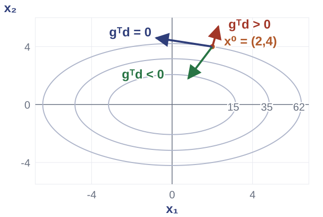
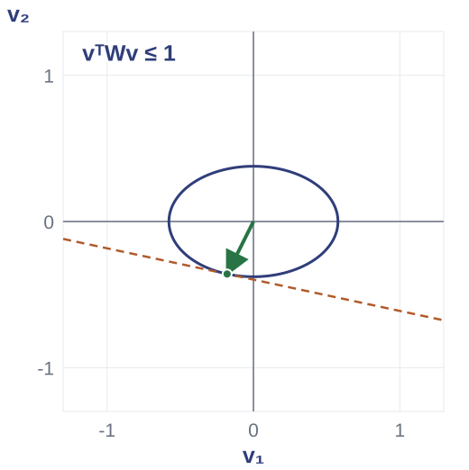

2. Hướng giảm và độ dài bướcNhu cầu: tại điểm có $\nabla f(x)\ne0$, chọn một hướng làm $f$ giảm và một độ dài bước được nhận.
Đạo hàm hướng · quay lui Armijo · hướng dốc nhất · gradient Lipschitz · tốc độ hội tụ
Điều kiện dừng $\nabla f(x^*)=0$ là đích của bài toán không ràng buộc; tại điểm có $\nabla f(x)\ne0$, một bước lặp cần một hướng làm $f$ giảm và một độ dài bước được nhận. Dấu của đạo hàm hướng $g^Td$ kiểm tra hướng, quy tắc quay lui Armijo chọn độ dài bước, và bài toán con $Q_W$ cho hướng ngược gradient ($W=I$) cùng hướng dốc nhất theo chuẩn có trọng số. Các cận hội tụ của hạ gradient dùng hằng số Lipschitz $L$ và hằng số lồi mạnh $\mu$. Một ma trận trọng số $W$ cố định không theo độ cong thay đổi theo điểm; giới hạn này dẫn tới phương pháp Newton.
Đạo hàm hướng

Ví dụ. $f=\tfrac12(3x_1^2+7x_2^2)$, $x^0=(2,4)^T$, $g=(6,28)^T$; $d=(-1,0)^T$ cho $g^Td=-6<0$.
Định nghĩa. Với hướng $d\in\mathbb R^n$:
$$f'(x^0;d)\triangleq\lim_{t\downarrow0}\frac{f(x^0+td)-f(x^0)}{t}.$$
Mệnh đề. Nếu $f$ khả vi tại $x^0$ thì $f'(x^0;d)=g^Td$, $g=\nabla f(x^0)$.
$g^Td<0$: $f(x^0+td)<f(x^0)$ khi $t>0$ đủ nhỏ; $d$ gọi là hướng giảm.
$g^Td>0$: $f$ tăng khi $t>0$ đủ nhỏ; $g^Td=0$: bậc một chưa đủ kết luận.
Khi $\nabla f(x^0)\ne0$, điểm $x^0$ chưa thỏa điều kiện dừng $\nabla f(x^*)=0$, nên một bước lặp cần một hướng $d$ làm $f$ giảm. Đạo hàm hướng (directional derivative) kiểm tra một hướng như vậy bằng một tích vô hướng. Ký hiệu $g=\nabla f(x^0)$ là vector gradient tại điểm hiện tại, khác hàm đối ngẫu $g(\lambda,\nu)$ của Bài 03.
Hàm khả vi có khai triển bậc một $f(x^0+td)=f(x^0)+t\,g^Td+o(t)$ khi $t\downarrow0$; chia cho $t>0$ rồi cho $t\downarrow0$ được $f'(x^0;d)=g^Td$. Khi $g^Td\ne0$, số hạng $t\,g^Td$ lớn hơn phần dư $o(t)$ về trị tuyệt đối với mọi $t>0$ đủ nhỏ, nên dấu của $g^Td$ quyết định $f$ giảm hay tăng dọc tia $x^0+td$. Khi $g^Td=0$, kết luận phụ thuộc các số hạng bậc cao. Bài 00 xét $D_{\mathbf u}h$ với $\|\mathbf u\|_2=1$; ở đây $d$ không cần chuẩn hóa, và $f'(x^0;sd)=s\,f'(x^0;d)$ với $s>0$, nên đổi độ dài $d$ không đổi dấu. Ví dụ trên trang, dùng lại trong cả mạch, là $f=\tfrac12(3x_1^2+7x_2^2)$ tại $x^0=(2,4)^T$; $\nabla f(x)=(3x_1,7x_2)^T$ cho $g=(6,28)^T$. Hướng $(-1,0)^T$ cho $-6$, hướng giảm (descent direction); $(1,0)^T$ cho $6$, hướng tăng; $(-28,6)^T$ cho $-168+168=0$, tiếp xúc với đường mức (level curve) qua $x^0$.
Hình vẽ các đường mức $f=15$, $35$, $62$ (đường $62$ đi qua $x^0$) và ba mũi tên mang nhãn ba dấu của $g^Td$. Hai trục có tỷ lệ khác nhau, nên góc nhìn thấy giữa mũi tên và đường mức không chứng minh tính trực giao; dấu được xác định bằng phép tính. Nguồn: Boyd và Vandenberghe (2004), §§9.2–9.4.1; MIT 6.079, mùa thu 2009, bài giảng 16; điều kiện KKT trong Bài 03.
Tiêu chuẩn dấu chỉ kiểm tra một hướng cho trước; cực tiểu riêng $g^Td$ theo $d$ không có nghiệm hữu hạn khi $g\ne0$, vì $d=-sg$ cho $g^Td=-s\|g\|_2^2\to-\infty$ khi $s\to\infty$, nên bài toán chọn hướng cần thêm một số hạng bậc hai.
Hướng ngược gradient
Xấp xỉ tuyến tính $f(x+d)\approx f(x)+g^Td$ không có cực tiểu hữu hạn khi $g\ne0$; thêm số hạng phạt độ dài bước:
$$Q_I(d)=f(x)+g^Td+\tfrac12\|d\|_2^2.$$
$$\nabla_dQ_I(d)=g+d=0\quad\Longrightarrow\quad d_G=-g.$$
Nhắc lại: ma trận đối xứng $W\succ0$ (xác định dương) khi $v^TWv>0$ với mọi $v\ne0$.
$x$ cố định, biến là $d\in\mathbb R^n$; $\nabla_d^2Q_I=I\succ0$ nên $Q_I$ lồi chặt (còn gọi là lồi nghiêm ngặt), $d_G$ duy nhất.
$d_G$ gọi là hướng ngược gradient (negative gradient).
Hướng ngược gradient (negative gradient) được định nghĩa là nghiệm của mô hình bậc hai $Q_I$, gồm xấp xỉ tuyến tính và số hạng phạt (penalty term) $\tfrac12\|d\|_2^2$ phạt bước dài; số hạng này cần vì xấp xỉ tuyến tính chỉ đáng tin khi $d$ nhỏ.
Trong bài toán con, $x$ là điểm lặp hiện tại và được giữ cố định (ở bước đầu $x=x^0$), nên $f(x)$ và $g=\nabla f(x)$ là hằng; biến là $d\in\mathbb R^n$. Gradient của $Q_I$ theo $d$ là $g+d$; cho bằng 0 được $d_G=-g$. Hessian của $Q_I$ theo $d$ là $I\succ0$, nên $Q_I$ lồi chặt (còn gọi là lồi nghiêm ngặt); điều kiện dừng, tức KKT của bài toán con không ràng buộc, vừa cần vừa đủ và nghiệm duy nhất. Chỉ số $I$ ghi ma trận của số hạng bậc hai; thay $I$ bằng một ma trận $W\succ0$ cho các hướng khác trong cùng sơ đồ. Với hàm bậc hai $\tfrac12(3x_1^2+7x_2^2)$, $d_G=(-6,-28)^T$.
$d_G$ là nghiệm của bài toán con theo $d$, khác nghiệm của bài toán gốc theo $x$; điểm $x+d_G$ nói chung chưa là cực tiểu của $f$. Hướng này có $g^Td_G=-\|g\|_2^2<0$ khi $g\ne0$, nên là hướng giảm theo tiêu chuẩn dấu của đạo hàm hướng. Nguồn: Boyd và Vandenberghe (2004), §§9.2–9.4.1; MIT 6.079, mùa thu 2009, bài giảng 16; điều kiện KKT trong Bài 03.
Bài toán con quyết định hướng nhưng không quyết định độ dài bước $t$ trong $x^+=x+td_G$; tiêu chuẩn dấu chỉ bảo đảm $f$ giảm với $t$ đủ nhỏ.
Độ dài bước
Cập nhật $x^+=x+td$ với hướng giảm $d$ và độ dài bước $t>0$.
$f=\tfrac12(3x_1^2+7x_2^2)$, $x^0=(2,4)^T$, $d_G=(-6,-28)^T$, $g^Td_G=-820$:
$$f(x^0+td_G)=62-820t+2798t^2,$$
nhỏ hơn $f(x^0)=62$ khi và chỉ khi $0<t<410/1399\approx0{,}29$.
Kết luận: bước $t=1/2$ nằm ngoài khoảng $(0,\,410/1399)$ nên làm $f$ tăng.
Hàm một biến $\varphi(t)=f(x^0+td_G)$ trên tia cập nhật cho biết chính xác những bước nào làm $f$ giảm trên hàm bậc hai $\tfrac12(3x_1^2+7x_2^2)$, nơi $g^Td_G=-\|g\|_2^2=-820$.
Trên tia, $\varphi(t)=f(x^0+td_G)=\tfrac12[3(2-6t)^2+7(4-28t)^2]=62-820t+2798t^2$. Hệ số bậc nhất $-820$ là $g^Td_G$. Hệ số bậc hai $2798=\tfrac12d_G^T\operatorname{diag}(3,7)d_G=\tfrac12(3\cdot36+7\cdot784)$ đến từ độ cong của $f$ dọc hướng. Do đó $\varphi(t)<62$ khi và chỉ khi $2798t^2<820t$, tức $0<t<820/2798=410/1399\approx0{,}29$. Hình vẽ tia $x^0+td_G$ trên các đường mức của hàm này, với mũi tên chỉ chiều $t$ tăng, và hai điểm trên tia: $t=1/4$ cho $(1/2,-3)^T$ với $f=255/8<62$; $t=1/2$ cho $(-1,-10)^T$ với $f=703/2>62$. Bước $1/2$ vượt khỏi vùng giảm nên $f$ tăng.
Khoảng bước làm $f$ giảm bị giới hạn bởi độ cong. Ở ví dụ bậc hai, khoảng này tính được dạng đóng. Với hàm tổng quát thì không, nên cần một phép kiểm tra chỉ dùng giá trị $f$ tại điểm thử và số $g^Td$ đã có. Nguồn: Boyd và Vandenberghe (2004), §§9.2–9.4.1; MIT 6.079, mùa thu 2009, bài giảng 16.
Điều kiện Armijo là phép kiểm tra như vậy: nó so $\varphi(t)$ với một đường thẳng qua $(0,\varphi(0))$ có hệ số góc bằng một phần của $g^Td$.
Quay lui Armijo
Định nghĩa. Điều kiện giảm đủ (Armijo), $0<\alpha\le1/2$:
$$f(x+td)\le f(x)+\alpha t\,g^Td.$$
Ý nghĩa: mức giảm thực tế (actual reduction) đạt ít nhất phần $\alpha$ của mức giảm dự báo $-t\,g^Td$.
Với hướng giảm $d$ ($g^Td<0$), đặt $t=1$.
Nếu $x+td$ thuộc miền và thỏa điều kiện thì nhận $t$.
Nếu không, co $t\leftarrow\beta t$ ($0<\beta<1$) và thử lại.
Điều kiện giảm đủ (sufficient decrease condition), gọi theo tên Armijo, nhận một bước khi mức giảm thực tế đạt ít nhất phần $\alpha$ của mức giảm $-t\,g^Td$ do xấp xỉ tuyến tính dự báo.
Vế phải $f(x)+\alpha t\,g^Td$ là đường thẳng qua $(0,f(x))$ với hệ số góc $\alpha g^Td$, thoải hơn tiếp tuyến có hệ số góc $g^Td$ vì $0<\alpha<1$. Khi $t\downarrow0$, $f(x+td)=f(x)+t\,g^Td+o(t)$ và $t\,g^Td<\alpha t\,g^Td$ do $g^Td<0$, nên mọi bước dương đủ nhỏ thỏa điều kiện. Thủ tục quay lui (backtracking line search) thử $t=1,\beta,\beta^2,\dots$, nên dừng sau hữu hạn lần co. Điểm thử ngoài miền của $f$ bị loại trước khi đánh giá hàm; nếu $t=1$ thỏa điều kiện thì nhận ngay. Hình dùng hàm bậc hai $\tfrac12(3x_1^2+7x_2^2)$ với $d=d_G$ và $\alpha=1/10$: đường cong liền là $62-820t+2798t^2$, đường nét đứt là ngưỡng $62-82t$. Bước được nhận khi $2798t^2\le738t$, tức $0<t\le369/1399\approx0{,}26$; điểm $t=1/4$ nằm dưới ngưỡng.
Miền $0<\alpha\le1/2$ khớp ghi chú bài giảng: các định lý hội tụ của hạ gradient dùng cả $\alpha=\tfrac12$, còn phân tích số bước của Newton đòi $\alpha<\tfrac12$ như Boyd và Vandenberghe. Với hàm bậc hai lồi chặt có Hessian $H$ và hướng $d=-H^{-1}g$ cực tiểu hóa đúng hàm bậc hai (hướng Newton, xây dựng ở phần Newton), $f(x+d)=f(x)+\tfrac12g^Td$, nên bước đầy đủ $t=1$ thỏa điều kiện khi và chỉ khi $\alpha\le1/2$. Nguồn: Boyd và Vandenberghe (2004), §9.2; MIT 6.079, mùa thu 2009, bài giảng 16.
Với $\beta=1/2$, dãy bước thử trên hàm này là $1,1/2,1/4$, và bước đầu tiên rơi vào vùng nhận $0<t\le369/1399$ là $t=1/4$.
Ví dụ: quay lui Armijo từ $x^0=(2,4)^T$
$f=\tfrac12(3x_1^2+7x_2^2)$, $d=d_G=(-6,-28)^T$, $f(x^0)=62$, $g^Td=-820$, $\alpha=1/10$, $\beta=1/2$. Tính bước được nhận.
Kết luận: $t=1/4$, $x^1=(1/2,-3)^T$, $f(x^1)=255/8$; vòng lặp sau tính lại gradient tại $x^1$.
Thủ tục quay lui được chạy trên hàm bậc hai $\tfrac12(3x_1^2+7x_2^2)$ với hướng ngược gradient $d_G=(-6,-28)^T$, $\alpha=1/10$ và $\beta=1/2$. Với $g^Td=-820$, ngưỡng Armijo là $62+\tfrac1{10}t(-820)=62-82t$.
Mỗi hàng của bảng là một lần thử: điểm thử $x^0+td$, giá trị hàm tại đó và ngưỡng. Lần 1: $t=1$ cho $(-4,-24)^T$, $f=\tfrac12(48+4032)=2040>-20$, loại. Lần 2: $t=1/2$ cho $(-1,-10)^T$, $f=703/2>21$, loại. Lần 3: $t=1/4$ cho $(1/2,-3)^T$, $f=255/8\le83/2$, nhận; thủ tục dừng tại đây nên không thử $t=1/8$. Các bước thử là lũy thừa của $\beta=1/2$. Kết quả khớp với vùng nhận $0<t\le369/1399\approx0{,}26$ đọc từ đồ thị: $1$ và $1/2$ nằm ngoài, $1/4$ nằm trong.
Điểm mới $x^1=(1/2,-3)^T$ có $f(x^1)=255/8<62$. Gradient phải tính lại tại điểm mới: $g(x^1)=(3x_1,7x_2)^T=(3/2,-21)^T$; hướng của vòng lặp sau là $-g(x^1)$, khác $d_G$ của vòng lặp đầu. Bước $t=1/4$ chỉ đúng cho vòng lặp này; mỗi vòng lặp chạy quay lui lại từ $t=1$. Nguồn: Boyd và Vandenberghe (2004), §§9.2–9.3; MIT 6.079, mùa thu 2009, bài giảng 16.
Ghép bốn thao tác tính gradient, đặt $d=-g$, quay lui và cập nhật cho thuật toán hạ gradient hoàn chỉnh.
Thuật toán hạ gradient
Đầu vào: $x^0\in\operatorname{dom}f$ (miền xác định của $f$, mở), $\varepsilon_g>0$, $\alpha,\beta$. Đầu ra: $x$ với $\|\nabla f(x)\|_2\le\varepsilon_g$.
Tính $g=\nabla f(x)$.
Nếu $\|g\|_2\le\varepsilon_g$ thì dừng.
Đặt $d=-g$; chọn $t$ bằng quay lui Armijo.
Cập nhật $x\leftarrow x+td$, lặp lại.
Chi phí mỗi vòng lặp: một gradient và vài lần tính $f$ để thử bước.
Thuật toán hạ gradient (gradient descent) lặp lại vòng lặp vừa chạy trên hàm bậc hai $\tfrac12(3x_1^2+7x_2^2)$ cho tới khi chuẩn gradient đủ nhỏ: tính gradient, đặt $d=-g$, chọn $t$ bằng quay lui Armijo, cập nhật. Vòng lặp đầu cho $x^1=(1/2,-3)^T$.
Tiêu chí dừng được kiểm tra trước khi tính hướng; nếu $\|g\|_2\le\varepsilon_g$ ngay tại $x^0$ thì thuật toán dừng mà không cập nhật. Đầu vào gồm điểm đầu trong miền mở của $f$, dung sai $\varepsilon_g>0$ và hai tham số $\alpha,\beta$ của quay lui. Đầu ra là điểm có chuẩn gradient không quá $\varepsilon_g$. Chi phí mỗi vòng lặp chủ yếu là một lần tính gradient và vài lần đánh giá $f$ khi thử bước.
Tiêu chí $\|g\|_2\le\varepsilon_g$ đo mức vi phạm điều kiện dừng $\nabla f(x^*)=0$ của bài toán gốc. Với $f$ lồi, điểm thỏa đúng $\nabla f=0$ là nghiệm tối ưu toàn cục. Chuẩn gradient nhỏ chưa cho cận sai số mục tiêu; cận và số bước cần giả thiết về độ cong của $f$ (gradient Lipschitz, lồi mạnh (strongly convex)), được định nghĩa và chứng minh trong phần hội tụ. Nguồn: Boyd và Vandenberghe (2004), §§9.2–9.3; MIT 6.079, mùa thu 2009, bài giảng 16; điều kiện KKT trong Bài 03.
Với bước cố định, mỗi tọa độ của hàm này nhân với $1-t\lambda_i$, trong đó $\lambda_i\in\{3,7\}$ là các giá trị riêng của Hessian, nên tác động của độ cong lên hướng $-g$ đọc được riêng từng tọa độ.
Độ cong không đồng đều
$f=\tfrac12(3x_1^2+7x_2^2)$, bước cố định $t=1/4$, $x^+=x-tg$:
$x_1^+=(1-3t)\,x_1=\tfrac14 x_1$
$x_2^+=(1-7t)\,x_2=-\tfrac34 x_2$
Kết luận: hệ số co lớn nhất $\max\{\lvert1-3t\rvert,\lvert1-7t\rvert\}\ge2/5$ với mọi $t$, dấu bằng tại $t=1/5$.
Hạ gradient trên hàm bậc hai $\tfrac12(3x_1^2+7x_2^2)$ được chạy với bước giữ cố định $t=1/4$, bước Armijo đã nhận ở vòng lặp đầu, để thấy riêng tác động của hướng $-g$.
Với $f=\tfrac12(3x_1^2+7x_2^2)$, gradient $g=(3x_1,7x_2)^T$ được tính lại tại mỗi điểm. Cập nhật $x^+=x-tg$ cho $x_1^+=(1-3t)x_1$ và $x_2^+=(1-7t)x_2$. Với $t=1/4$, $x_1$ nhân $1/4$ và giữ dấu ($2\to1/2\to1/8$), còn $x_2$ nhân $-3/4$, đổi dấu ở mỗi vòng lặp và co chậm hơn ($4\to-3\to9/4$). Hình vẽ các điểm $k=0,\dots,4$ từ $x^0=(2,4)$ trên các đường mức: đường đi gần như về ngay trục $x_2$ rồi dao động qua lại theo phương $x_2$.
Không có bước cố định nào làm cả hai tọa độ co nhanh. Hệ số lớn nhất $\max\{|1-3t|,|1-7t|\}$ nhỏ nhất khi $1-3t=7t-1$, tức $t=1/5$, và bằng $2/5$. Giá trị này đúng bằng $(\kappa-1)/(\kappa+1)$ với số điều kiện (condition number) $\kappa=7/3$, tỷ số giữa độ cong lớn nhất và nhỏ nhất. Nguyên nhân nằm ở bài toán con chọn hướng: số hạng $\tfrac12\|d\|_2^2$ phạt độ dài bước như nhau theo mọi phương, trong khi hàm cong gấp $7/3$ lần theo $x_2$ so với $x_1$. Nguồn: Boyd và Vandenberghe (2004), §§9.3–9.4.1; MIT 6.079, mùa thu 2009, bài giảng 16.
Thay chuẩn Euclid trong số hạng phạt bằng một chuẩn có trọng số theo độ cong cho một bài toán con chọn hướng khác, bài toán hướng giảm dốc nhất.
Bài toán hướng giảm dốc nhất

Với $g=(6,28)^T$, $W=\operatorname{diag}(3,7)$: nghiệm là điểm tiếp xúc của elip với đường mức $6v_1+28v_2=c$ thấp nhất.
Chuẩn có trọng số: $\|v\|_W=\sqrt{v^TWv}$, $W\succ0$.
Định nghĩa. Hướng giảm dốc nhất (gọi tắt: hướng dốc nhất) chuẩn hóa ($g\ne0$) là nghiệm của
$$\min_v\ g^Tv\quad\text{với}\quad v^TWv\le 1.$$
Hàm Lagrange, nhân tử $\zeta\ge0$:
$$L_s(v,\zeta)=g^Tv+\zeta\,(v^TWv-1).$$
Độ cong không đồng đều đòi hỏi đo độ dài bước bằng một chuẩn có trọng số (weighted norm) theo từng phương. Với $W\succ0$, $\|v\|_W=\sqrt{v^TWv}$ là một chuẩn; quả cầu đơn vị của nó là elip, dẹt theo phương có trọng số lớn.
Hướng giảm dốc nhất (steepest descent direction), gọi tắt là hướng dốc nhất, có mức giảm bậc một $g^Tv$ lớn nhất trên mỗi đơn vị độ dài. Nếu không giới hạn độ dài thì $g^Tv$ không bị chặn dưới, nên bài toán con có ràng buộc $v^TWv\le1$. Dạng chuẩn hóa định nghĩa "dốc nhất" độc lập với độ dài bước; sau khi bỏ chuẩn hóa, hướng trùng nghiệm của mô hình $Q_W$ (mô hình $Q_I$ với $I$ thay bằng $W$). Với $W=I$, nghiệm là $v=-g/\|g\|_2$, cùng phương với hướng ngược gradient. Hình dùng hàm bậc hai $\tfrac12(3x_1^2+7x_2^2)$ với $g=(6,28)^T$: elip $3v_1^2+7v_2^2=1$ và một đường mức $6v_1+28v_2=c$ (nét đứt), là đường thấp nhất còn tiếp xúc với elip; mũi tên từ gốc chỉ tới điểm tiếp xúc, chính là nghiệm $v=-(2,4)^T/\sqrt{124}$. Tại điểm tiếp xúc, gradient của mục tiêu song song với gradient của ràng buộc.
Chọn $W=\operatorname{diag}(3,7)$ theo độ cong là quyết định mô hình, KKT không bắt buộc lựa chọn này; với hàm này, nó trùng Hessian. Nhân tử $\zeta\ge0$ của bài toán con khác $\lambda$ của Bài 03. Tập khả thi đóng và bị chặn (compact), bài toán con lồi, thỏa Slater tại $v=0$, nên bài toán con có nghiệm và KKT vừa cần vừa đủ. Với một chuẩn bất kỳ, hướng chuẩn hóa giải $\min_{\|v\|\le1}g^Tv$, còn $\|g\|_*=\max_{\|v\|\le1}g^Tv$ là chuẩn đối ngẫu (dual norm); công thức dùng $W^{-1}$ về sau chỉ dành cho chuẩn bậc hai. Nguồn: Boyd và Vandenberghe (2004), §9.4; MIT 6.079, mùa thu 2009, bài giảng 16.
Đạo hàm $L_s$ theo $v$ và điều kiện bù trừ với $\zeta$ cho hệ KKT bốn nhóm của bài toán con.
Hệ KKT của hướng dốc nhất
Đạo hàm $L_s$ theo $v$ và điều kiện bù trừ cho bốn nhóm điều kiện:
Dừng: $g+2\zeta Wv=0$.
Khả thi gốc: $v^TWv\le1$.
Khả thi đối ngẫu: $\zeta\ge0$.
Bù trừ: $\zeta(v^TWv-1)=0$.
Nhân tử $\zeta\ge0$ thuộc ràng buộc elip $v^TWv\le1$. Đạo hàm của $L_s(v,\zeta)=g^Tv+\zeta(v^TWv-1)$ theo $v$ là $g+2\zeta Wv$; nhóm dừng nói gradient $g$ của mục tiêu tuyến tính song song, ngược chiều, với pháp tuyến $2Wv$ của elip. Bù trừ nói hoặc $\zeta=0$, hoặc ràng buộc hoạt động. Bài toán con lồi, có tập khả thi đóng và bị chặn, thỏa Slater tại $v=0$, nên hệ bốn nhóm vừa cần vừa đủ.
Nghiệm của bài toán hướng dốc nhất
Mệnh đề. Với $W\succ0$ và $g\ne0$, hệ KKT có nghiệm duy nhất
$$\zeta=\tfrac12\sqrt{g^TW^{-1}g},\qquad v=-\frac{W^{-1}g}{\sqrt{g^TW^{-1}g}}.$$
Ý nghĩa: $\zeta>0$ nên ràng buộc elip hoạt động; $v$ nằm trên biên, ngược hướng $W^{-1}g$.
Với $W=I$: $v=-g/\|g\|_2$, cùng phương với hướng ngược gradient.
Nghiệm chuẩn hóa có độ dài một theo $\|\cdot\|_W$ và ngược hướng $W^{-1}g$. Nhân tử $\zeta=\tfrac12\sqrt{g^TW^{-1}g}$ dương, nên ràng buộc elip hoạt động và nghiệm nằm trên biên, tại điểm tiếp xúc với đường mức thấp nhất của mục tiêu tuyến tính. Công thức chỉ dùng khi $g\ne0$; tại $g=0$ thuật toán đã dừng.
Chứng minh: nghiệm của bài toán hướng dốc nhất
Nhóm dừng: nếu $\zeta=0$ thì $g=0$, trái giả thiết; vậy $\zeta>0$.
Bù trừ: $\zeta>0$ buộc $v^TWv=1$, ràng buộc hoạt động.
Từ nhóm dừng, $v=-\tfrac{1}{2\zeta}W^{-1}g$.
Thay vào $v^TWv=1$: $g^TW^{-1}g/(4\zeta^2)=1$, nên $\zeta=\tfrac12\sqrt{g^TW^{-1}g}$; thế ngược được $v$.
Bước 1 loại $\zeta=0$: khi đó nhóm dừng cho $g=0$, trái giả thiết $g\ne0$. Trường hợp $g=0$ là tiêu chí dừng của thuật toán, nơi công thức chia cho $\sqrt{g^TW^{-1}g}$ không áp dụng. Bước 2: $\zeta>0$ và điều kiện bù trừ buộc $v^TWv=1$, nên nghiệm nằm trên biên elip, tại điểm tiếp xúc với đường mức thấp nhất của mục tiêu tuyến tính. Bước 3: từ nhóm dừng, $v=-\tfrac{1}{2\zeta}W^{-1}g$; thay vào $v^TWv=1$ được $g^TW^{-1}g/(4\zeta^2)=1$, tức $\zeta=\tfrac12\sqrt{g^TW^{-1}g}$ vì $\zeta>0$. Thay ngược lại cho công thức của $v$ trên mặt trang.
Với $W=\operatorname{diag}(3,7)$ và $g=(6,28)^T$: $W^{-1}g=(6/3,28/7)^T=(2,4)^T$, $g^TW^{-1}g=12+112=124$, nên $v=-(2,4)^T/\sqrt{124}$. Kiểm tra lại $v^TWv=(3\cdot4+7\cdot16)/124=1$, đúng điểm trên biên elip. Nguồn: Boyd và Vandenberghe (2004), §9.4; MIT 6.079, mùa thu 2009, bài giảng 16.
Vector $v$ có độ dài một theo $\|\cdot\|_W$; hướng dùng trong phép cập nhật $x^+=x+td$ cần thêm một quy ước về độ dài, và quy ước đó dùng chính số $\sqrt{g^TW^{-1}g}$ vừa xuất hiện.
Hướng dốc nhất có trọng số
Quy ước độ dài: nhân $v$ với chuẩn đối ngẫu
$$\|g\|_{W,*}=\max_{\|v\|_W\le1}g^Tv=\sqrt{g^TW^{-1}g}.$$
$$\begin{aligned}d&=\|g\|_{W,*}\,v=-W^{-1}g,\\ \text{tức}\quad Wd&=-g.\end{aligned}$$
Ví dụ. $W=\operatorname{diag}(3,7)$, $g=(6,28)^T$:
$$\begin{aligned}3d_1&=-6,\quad7d_2=-28\\d&=(-2,-4)^T,\quad d^TWd=124\\v&=d/\sqrt{124}.\end{aligned}$$
Kết luận: $d$ là nghiệm của $Q_W(d)=f(x)+g^Td+\tfrac12d^TWd$, tức $g+Wd=0$; $W=I$ cho $d=-g$.
Chuẩn đối ngẫu cho quy ước độ dài: theo Boyd và Vandenberghe, hướng cập nhật là $v$ nhân với $\|g\|_{W,*}$. Quy ước này cho $d=-g$ khi $W=I$, khớp với hướng ngược gradient đã có.
Quả cầu $\|v\|_W\le1$ đối xứng qua gốc, nên giá trị nhỏ nhất của $g^Tv$ bằng âm giá trị lớn nhất; do đó bài toán con chọn hướng nối trực tiếp với chuẩn đối ngẫu. Với $W\succ0$, gọi $W^{1/2}$ là căn bậc hai đối xứng xác định dương của $W$ và $W^{-1/2}=(W^{1/2})^{-1}$. Bất đẳng thức Cauchy–Schwarz cho $g^Tv=(W^{-1/2}g)^T(W^{1/2}v)\ge-\sqrt{g^TW^{-1}g}\,\|v\|_W$. Nghiệm chuẩn hóa đạt dấu bằng, nên chuẩn đối ngẫu bằng $\sqrt{g^TW^{-1}g}$. Nhân $v=-W^{-1}g/\sqrt{g^TW^{-1}g}$ với số này được $d=-W^{-1}g$, tức $Wd=-g$. Trên hàm bậc hai $\tfrac12(3x_1^2+7x_2^2)$, $3d_1=-6$ và $7d_2=-28$ cho $d=(-2,-4)^T$; khi tính chỉ giải hệ $Wd=-g$, không lập $W^{-1}$ tường minh.
Ba đại lượng $v$, $d$, $t$ không hoán đổi được: $\|v\|_W=1$, còn $d^TWd=124$ là bình phương độ dài của $d$ theo $W$, và $t$ là độ dài bước, một số dương do quy tắc nhận bước chọn sau. Mô hình $Q_W$ thay ma trận $I$ trong mô hình bậc hai đã dùng bằng $W\succ0$; điều kiện dừng $g+Wd=0$ của nó chính là hệ vừa giải. Giảm mô hình là $Q_W(0)-Q_W(d)=124/2=62$. Trong hàm này, $W$ được chọn trùng Hessian; với hàm không bậc hai, Hessian đổi theo điểm nên không có $W$ cố định nào trùng Hessian ở mọi điểm lặp. Nguồn: Boyd và Vandenberghe (2004), §§9.2–9.4.1; MIT 6.079, mùa thu 2009, bài giảng 16.
Khi $W$ được chọn bằng Hessian tại điểm hiện tại, hệ $Wd=-g$ trở thành hệ Newton và $d^TWd$ trở thành hai lần mức giảm của mô hình.
Bài tập: hướng theo $W$ và quay lui
Cho $f=\tfrac12(3x_1^2+7x_2^2)$, $x^0=(2,4)^T$, $x^1=(1/2,-3)^T$, $W=\operatorname{diag}(3,7)$.
Câu hỏi: (a) Tại $x^1$: viết điều kiện dừng của $Q_W$, giải $d$, rồi tính $x^1+d$ và $\|d\|_W^2$.
(b) Quay lui từ $x^0$ theo $d_G=(-6,-28)^T$ với $\beta=1/2$, $\alpha=3/10$: xác định bước được nhận.
Hai câu hỏi kiểm tra hai thành phần của một bước lặp trên dữ kiện mới: hướng xác định bởi điều kiện dừng của mô hình $Q_W$, và độ dài bước xác định bởi điều kiện Armijo.
Gợi ý: câu (a) dùng gradient $(3x_1,7x_2)^T$ tại điểm mới và giải hệ $Wd=-g$ theo từng tọa độ; câu (b) dùng lại hàm trên tia $62-820t+2798t^2$ và lập ngưỡng mới $62-\alpha\cdot820\,t$.
Bài tập: hướng theo $W$ và quay lui
Lời giải: (a) $g=(3/2,-21)^T$; $g+Wd=0$ cho $3d_1=-3/2$, $7d_2=21$, $d=(-1/2,3)^T$.
$x^1+d=(0,0)^T$ là nghiệm, vì $W$ trùng Hessian; $\|d\|_W^2=3/4+63=255/4$.
(b) Ngưỡng $62-246t$; các bước $t=1,\ 1/2,\ 1/4$ bị loại, tại $t=1/4$ có $255/8>1/2$.
$t=1/8$: $103/32\le125/4$, nhận. Tăng $\alpha$ làm ngưỡng chặt hơn.
Lời giải câu 1. Tại $x^1=(1/2,-3)^T$, $g=(3x_1,7x_2)^T=(3/2,-21)^T$. Đạo hàm $Q_W(d)=f(x^1)+g^Td+\tfrac12d^TWd$ theo $d$ và cho bằng 0 được $g+Wd=0$, tức $3d_1=-3/2$ và $7d_2=21$, nên $d=(-1/2,3)^T$. Khi đó $x^1+d=(0,0)^T$, đúng nghiệm tối ưu của hàm bậc hai $\tfrac12(3x_1^2+7x_2^2)$, vì $W$ trùng Hessian của hàm bậc hai. $\|d\|_W^2=d^TWd=3/4+63=255/4$. Hướng chuẩn hóa là $v=d/\|d\|_W$ với $\|v\|_W=1$, còn $t$ do quy tắc nhận bước quyết định.
Lời giải câu 2. Với $g^Td_G=-820$ và $\alpha=3/10$, ngưỡng là $62-246t$; trên tia, $f(x^0+td_G)=62-820t+2798t^2$. Lần thử $t=1$: $2040>-184$, loại. $t=1/2$: $703/2>-61$, loại. $t=1/4$: $255/8>1/2$, loại. $t=1/8$: $103/32\le125/4$, nhận. Tham số $\alpha$ lớn hơn làm ngưỡng chặt hơn, nên bước $1/4$ được nhận khi $\alpha=1/10$ nhưng bị loại khi $\alpha=3/10$. Nguồn: Boyd và Vandenberghe (2004), §§9.2–9.4; MIT 6.079, mùa thu 2009, bài giảng 16.
Hai kết quả mở hai hướng: bảo đảm hội tụ của hạ gradient với bước cố định và với quay lui; và mô hình dùng Hessian tại mỗi điểm thay cho ma trận cố định $W$, vì với hàm này lựa chọn $W=H$ cho nghiệm sau một bước.
Gradient Lipschitz
Nhu cầu: đếm số bước hạ gradient với bước $t=1/L$ để $f(x^k)-f^*\le\varepsilon$, $f^*=\inf f$.
Định nghĩa. $f$ khả vi trên $\mathbb R^n$ có gradient $L$-Lipschitz nếu
$$\|\nabla f(x)-\nabla f(y)\|_2\le L\|x-y\|_2\quad\forall x,y.$$
Hệ quả. Cận trên bậc hai:
$$\begin{aligned}f(y)\le{}&f(x)+\nabla f(x)^T(y-x)\\&+\tfrac L2\|y-x\|_2^2.\end{aligned}$$
$f$ lồi, khả vi hai lần: $\nabla^2f\preceq LI$, tức $v^T\nabla^2f\,v\le L\|v\|_2^2$ với mọi $v$.
Phân tích hội tụ của hạ gradient dùng bước cố định $t=1/L$. Bước này chỉ an toàn khi có một hằng số $L$ chặn trên độ cong của $f$. Giả thiết tương ứng là gradient $L$-Lipschitz: gradient thay đổi không nhanh hơn $L$ lần khoảng cách giữa hai điểm.
Cận trên bậc hai suy từ định nghĩa. Viết $f(y)-f(x)-\nabla f(x)^T(y-x)=\int_0^1\big(\nabla f(x+\tau(y-x))-\nabla f(x)\big)^T(y-x)\,d\tau$. Theo Cauchy–Schwarz và tính Lipschitz, biểu thức dưới dấu tích phân không vượt quá $L\tau\|y-x\|_2^2$, và $\int_0^1\tau\,d\tau=1/2$. Vậy parabol độ cong $L$ tựa tại $x$ nằm trên $f$. Tính lồi cho chiều còn lại: tiếp tuyến tại $x$ nằm dưới $f$. Hình vẽ hàm mất mát logistic $f(s)=\log(1+e^s)$ của hồi quy logistic (logistic regression), cùng parabol cận trên $q$ (nét đứt) và tiếp tuyến (nét chấm) dựng tại $s=1$, nơi $f(1)\approx1{,}313$, $f'(1)\approx0{,}731$. Ở đây $f''(s)=\sigma(s)(1-\sigma(s))\le1/4$ với $\sigma(s)=1/(1+e^{-s})$, nên $L=1/4$, và đồ thị $f$ bị chặn hai phía bởi hai đường.
Với $f$ lồi, khả vi hai lần, gradient $L$-Lipschitz tương đương $\nabla^2f(x)\preceq LI$ tại mọi $x$; nếu $f$ không lồi, điều kiện là $-LI\preceq\nabla^2f(x)\preceq LI$. Với hàm bậc hai $\tfrac12(3x_1^2+7x_2^2)$, Hessian không đổi $\operatorname{diag}(3,7)$, nên $L=7$, giá trị riêng lớn nhất. Nguồn: Boyd và Vandenberghe (2004), §9.1.2 (hằng số $M$ ở đó đóng vai $L$) và §9.3; MIT 6.079, mùa thu 2009, bài giảng 16.
Thế $y=x-\nabla f(x)/L$ vào cận trên bậc hai cho mức giảm bảo đảm của một bước gradient với $t=1/L$.
Bổ đề giảm
Bổ đề. Nếu $\nabla f$ là $L$-Lipschitz thì với mọi $x$:
$$f\big(x-\tfrac1L\nabla f(x)\big)\le f(x)-\frac1{2L}\|\nabla f(x)\|_2^2.$$
Ý nghĩa: bước $t=1/L$ làm $f$ giảm ít nhất $\|g\|_2^2/(2L)$ mỗi bước, không cần quay lui.
Chứng minh. Thế $y=x-\tfrac1Lg$, $g=\nabla f(x)$, vào cận trên bậc hai:
$$f(x^+)\le f(x)-\tfrac1L\|g\|_2^2+\tfrac L2\cdot\tfrac1{L^2}\|g\|_2^2.$$
Ví dụ. $f=\tfrac12(3x_1^2+7x_2^2)$, $x^0=(2,4)^T$, $t=1/7$: $f(x^1)=96/49\approx1{,}96$ $\le24/7\approx3{,}43$.
Bổ đề giảm (descent lemma) cho mức giảm tối thiểu $\|g\|_2^2/(2L)$ của một bước gradient với $t=1/L$, không cần quay lui.
Với $y-x=-g/L$: số hạng bậc nhất $g^T(y-x)=-\|g\|_2^2/L$; số hạng bậc hai $\tfrac L2\cdot\|g\|_2^2/L^2=\|g\|_2^2/(2L)$; tổng là $-\|g\|_2^2/(2L)$. Hệ quả: dãy $f(x^k)$ không tăng, và giảm chặt khi $g\ne0$. Bước $t=1/L$ cực tiểu hóa cận trên $f(x)-t\|g\|_2^2+\tfrac{Lt^2}2\|g\|_2^2$ theo $t$, vì đạo hàm $(-1+Lt)\|g\|_2^2$ triệt tiêu tại đó. Với hàm bậc hai $\tfrac12(3x_1^2+7x_2^2)$ tại $x^0=(2,4)^T$: $\|g\|_2^2=36+784=820$, $x^1=x^0-g/7=(8/7,0)^T$ và $f(x^1)=\tfrac12\cdot3\cdot(8/7)^2=96/49$. Cận của bổ đề là $62-820/14=24/7$, lớn hơn giá trị thực tế. Tọa độ thứ hai về 0 sau một bước vì $L=7$ trùng độ cong theo phương đó.
Với $d=-g$ và $t=1/L$, vế phải của điều kiện Armijo là $f(x)-\alpha\|g\|_2^2/L$; bổ đề cho mức giảm $\|g\|_2^2/(2L)$, nên bước $1/L$ thỏa điều kiện Armijo khi $\alpha\le1/2$. Bổ đề chỉ cho biết $f$ giảm, chưa cho biết $f(x^k)$ tới $f^*$ nhanh đến đâu. Nguồn: Boyd và Vandenberghe (2004), §9.3; MIT 6.079, mùa thu 2009, bài giảng 16.
Muốn so $f(x^+)$ với $f^*$, cần thêm tính lồi, dưới dạng tiếp tuyến nằm dưới $f$, và sự tồn tại một điểm cực tiểu $x^*$.
Bất đẳng thức một bước
Giả thiết: thêm $f$ lồi, đạt cực tiểu tại $x^*$, $f^*=f(x^*)$; bước $x^+=x-\tfrac1Lg$.
Bổ đề giảm: $f(x^+)\le f(x)-\tfrac1{2L}\|g\|_2^2$.
Tính lồi, tiếp tuyến nằm dưới $f$: $f(x)\le f^*+g^T(x-x^*)$.
Khai triển $\|x^+-x^*\|_2^2$, rồi ghép với hai dòng trên:
$$f(x^+)-f^*\le\frac L2\Big(\|x-x^*\|_2^2-\|x^+-x^*\|_2^2\Big).$$
Ý nghĩa: sai số sau một bước bị chặn bởi mức giảm bình phương khoảng cách tới $x^*$.
Để so $f(x^+)$ với $f^*$ thay vì với $f(x)$, bổ đề giảm được ghép với tiếp tuyến dưới $f$; giả thiết thêm: $f$ lồi và đạt cực tiểu tại $x^*$, với $f^*=f(x^*)$. Bước vẫn là $x^+=x-\tfrac1Lg$.
Dòng 1 dùng gradient Lipschitz qua bổ đề giảm. Dòng 2 dùng tính lồi khả vi: $f(x^*)\ge f(x)+g^T(x^*-x)$, tức tiếp tuyến tại $x$ nằm dưới $f$, như trên hình hàm mất mát logistic; chuyển vế được $f(x)\le f^*+g^T(x-x^*)$. Ghép hai dòng: $f(x^+)-f^*\le g^T(x-x^*)-\tfrac1{2L}\|g\|_2^2$. Dòng 3 là đại số: $\|x^+-x^*\|_2^2=\|x-x^*-\tfrac1Lg\|_2^2=\|x-x^*\|_2^2-\tfrac2Lg^T(x-x^*)+\tfrac1{L^2}\|g\|_2^2$; nhân hai vế với $L/2$ và chuyển vế cho đúng đẳng thức của dòng 3. Thay đẳng thức này vào vế phải của bất đẳng thức ghép cho kết luận.
Vì $f(x^+)-f^*\ge0$, hiệu trong ngoặc không âm, tức $\|x^+-x^*\|_2\le\|x-x^*\|_2$: khoảng cách tới $x^*$ không tăng qua mỗi bước. Lập luận dùng một điểm cực tiểu $x^*$ bất kỳ; nghiệm không cần duy nhất. Nguồn: Boyd và Vandenberghe (2004), §9.3; ghi chú bài giảng, mục B, định lý cận $O(1/k)$.
Vế phải có dạng hiệu của hai số hạng liên tiếp, nên cộng các bất đẳng thức một bước theo $k$ bước làm các số hạng giữa triệt tiêu.
Tốc độ hội tụ $O(1/k)$
Định lý. Cho $f$ lồi, khả vi trên $\mathbb R^n$, $\nabla f$ là $L$-Lipschitz, $f$ đạt cực tiểu tại $x^*$. Với $x^{k+1}=x^k-\tfrac1L\nabla f(x^k)$ và mọi $k\ge1$:
$$f(x^k)-f^*\le\frac{L\|x^0-x^*\|_2^2}{2k}.$$
Ý nghĩa: sai số $\le\varepsilon$ khi $k\ge LR^2/(2\varepsilon)$, $R=\|x^0-x^*\|_2$; tốc độ dưới tuyến tính.
Chứng minh. Cộng bất đẳng thức một bước với $j=0,\dots,k-1$; dùng $f(x^j)$ không tăng.
Ví dụ. $f=\tfrac12(3x_1^2+7x_2^2)$: $\|x^0-x^*\|_2^2=20$, $L=7$, cận $70/k$.
Định lý $O(1/k)$ chặn sai số mục tiêu sau $k$ bước bằng $L\|x^0-x^*\|_2^2/(2k)$. Chứng minh là một tổng lồng (telescoping sum) của các bất đẳng thức một bước.
Với $j=0,\dots,k-1$: $\sum_{j=0}^{k-1}\big(f(x^{j+1})-f^*\big)\le\tfrac L2\big(\|x^0-x^*\|_2^2-\|x^k-x^*\|_2^2\big)\le\tfrac L2\|x^0-x^*\|_2^2$. Theo bổ đề giảm, $f(x^1)\ge f(x^2)\ge\dots\ge f(x^k)$, nên mỗi số hạng của tổng không nhỏ hơn $f(x^k)-f^*$ và tổng không nhỏ hơn $k(f(x^k)-f^*)$; chia cho $k$ được định lý. Giả thiết được dùng: gradient Lipschitz trong bổ đề giảm, tính lồi trong bước tiếp tuyến, sự tồn tại $x^*$ để định nghĩa $f^*$ và khoảng cách ban đầu.
Tốc độ $O(1/k)$ gọi là dưới tuyến tính (sublinear): giảm sai số mười lần cần tăng số bước khoảng mười lần. Với hàm bậc hai $\tfrac12(3x_1^2+7x_2^2)$, $x^*=0$ nên $\|x^0-x^*\|_2^2=4+16=20$ và cận là $7\cdot20/(2k)=70/k$; muốn sai số không quá $0{,}01$, cận yêu cầu $k\ge7000$. Cận đúng cho mọi hàm lồi có gradient $L$-Lipschitz, nên với một hàm cụ thể như hàm này nó có thể rất bi quan. Nguồn: Boyd và Vandenberghe (2004), §9.3; ghi chú bài giảng, mục B.
Định lý giả sử biết $L$ để đặt bước; khi không biết $L$, bước được chọn bằng quay lui Armijo, và chứng minh cần thêm một chặn dưới cho bước được nhận.
Bước quay lui bị chặn dưới
Định lý $O(1/k)$ cần biết $L$; quay lui với $d=-g$ chọn $t$ chỉ từ giá trị hàm.
Bổ đề. Với $0<\alpha\le\tfrac12$ và $0<t\le1/L$:
$$\begin{aligned}f(x-tg)&\le f(x)-t\big(1-\tfrac{Lt}2\big)\|g\|_2^2\\&\le f(x)-\tfrac t2\|g\|_2^2\le f(x)-\alpha t\|g\|_2^2.\end{aligned}$$
Hệ quả. Quay lui từ $t=1$ dừng với $t\ge t_{\min}=\min(1,\beta/L)$.
Định lý hội tụ với quay lui thay bước $1/L$ bằng bước do điều kiện Armijo chọn, chỉ từ giá trị hàm. Để dùng lại chứng minh cũ cần hai điều: bước được nhận thỏa một bất đẳng thức dạng bổ đề giảm, và bước đó không nhỏ quá một ngưỡng.
Bổ đề: thế $y=x-tg$ vào cận trên bậc hai được $f(x-tg)\le f(x)-t(1-\tfrac{Lt}2)\|g\|_2^2$; khi $t\le1/L$ thì $1-\tfrac{Lt}2\ge\tfrac12$. Với $d=-g$, điều kiện Armijo là $f(x-tg)\le f(x)-\alpha t\|g\|_2^2$, nên đúng với mọi $t\in(0,1/L]$ khi $\alpha\le\tfrac12$. Quay lui thử $1,\beta,\beta^2,\dots$ và dừng ở giá trị đầu tiên thỏa điều kiện: hoặc $t=1$, hoặc giá trị thử trước đó $t/\beta$ đã bị loại, nên $t/\beta>1/L$. Vậy $t\ge\min(1,\beta/L)=t_{\min}$.
Ghép chặn dưới này với bất đẳng thức một bước cho định lý hội tụ với quay lui.
Hội tụ với quay lui
Định lý. Cùng giả thiết của định lý $O(1/k)$, $\alpha=\tfrac12$, bước chọn bằng quay lui:
$$f(x^k)-f^*\le\frac{\|x^0-x^*\|_2^2}{2\,t_{\min}\,k}.$$
Ý nghĩa: không cần biết $L$; khi $L\ge\beta$, hằng số của cận tăng nhiều nhất $1/\beta$ lần.
Ví dụ. $f=\tfrac12(3x_1^2+7x_2^2)$, $\alpha=\beta=\tfrac12$: tại $x^0$ nhận $t=\tfrac18$; $t_{\min}=\tfrac1{14}$, cận $140/k$.
Chứng minh định lý với $\alpha=\tfrac12$: bước được nhận thỏa $f(x^+)\le f(x)-\tfrac t2\|g\|_2^2$, đúng dạng bổ đề giảm với $1/L$ thay bằng $t$. Lặp lại lập luận của bất đẳng thức một bước được $f(x^+)-f^*\le\tfrac1{2t}\big(\|x-x^*\|_2^2-\|x^+-x^*\|_2^2\big)$; hiệu trong ngoặc không âm và $\tfrac1{2t}\le\tfrac1{2t_{\min}}$, rồi cộng theo $k$ bước và dùng tính đơn điệu. Với hàm bậc hai $\tfrac12(3x_1^2+7x_2^2)$, $\alpha=\beta=\tfrac12$: ngưỡng là $62-410t$ và điều kiện tương đương $t\le205/1399\approx0{,}147$. Các lần thử $1,\tfrac12,\tfrac14$ bị loại ($2040>-348$, $703/2>-143$, $255/8>-81/2$), $t=\tfrac18$ được nhận ($103/32\le43/4$). $t_{\min}=1/14\le1/8$ và cận là $20\cdot14/(2k)=140/k$, gấp đôi cận $70/k$ của bước $1/L$, đúng bằng $1/\beta$. Với $\alpha<\tfrac12$, như $\alpha=1/10$ trong ví dụ quay lui, chặn $t\ge\min(1,\beta/L)$ vẫn đúng. Nguồn: Boyd và Vandenberghe (2004), §§9.2–9.3; ghi chú bài giảng, mục B.
Cả hai cận chỉ dùng tính lồi và gradient $L$-Lipschitz, nên không phân biệt hàm này với những hàm lồi có độ cong tiến về 0; một giả thiết về độ cong dương tối thiểu cho tốc độ nhanh hơn.
Hàm lồi mạnh
Nhu cầu: với $f=\tfrac12(3x_1^2+7x_2^2)$, $t=1/7$, cận $O(1/k)$ đòi $7000$ bước cho sai số $0{,}01$.
Trực quan. Đồ thị $f$ nằm trên một parabol độ cong $\mu$ tựa tại mỗi điểm.
Định nghĩa. $f$ khả vi trên $\mathbb R^n$ lồi mạnh với hằng số $\mu>0$ nếu với mọi $x,y$:
$$f(y)\ge f(x)+\nabla f(x)^T(y-x)+\tfrac\mu2\|y-x\|_2^2.$$
Hệ quả. Cực tiểu vế phải theo $y$: $\|\nabla f(x)\|_2^2\ge2\mu\,(f(x)-f^*)$.
Ví dụ. $\nabla^2f=\operatorname{diag}(3,7)\succeq3I$, nên $\mu=3$, $L=7$.
Trên hàm bậc hai $\tfrac12(3x_1^2+7x_2^2)$, cận $O(1/k)$ yêu cầu $k\ge7000$ để sai số không quá $0{,}01$, trong khi bước cố định $t=1/7$ chỉ cần 6 bước. Hàm này còn lồi mạnh: $\nabla^2f=\operatorname{diag}(3,7)\succeq3I$, nên $\mu=3$, $L=7$ và số điều kiện $\kappa=L/\mu=7/3$.
Trong định nghĩa, $f$ khả vi trên $\mathbb R^n$ và bất đẳng thức đúng với mọi $x,y$: $f$ nằm trên một parabol độ cong $\mu$ tựa tại mỗi điểm. Với $f$ khả vi hai lần, điều kiện tương đương $\nabla^2f(x)\succeq\mu I$, và luôn có $\mu\le L$. Hàm lồi mạnh, liên tục trên $\mathbb R^n$ có đúng một điểm cực tiểu, nên $f^*$ xác định. Cực tiểu vế phải theo $y$ đạt tại $y=x-\nabla f(x)/\mu$ với giá trị $f(x)-\|\nabla f(x)\|_2^2/(2\mu)$; vế phải là cận dưới của $f(y)$ với mọi $y$, nên $f^*$ không nhỏ hơn giá trị đó, cho $\|\nabla f(x)\|_2^2\ge2\mu(f(x)-f^*)$.
Bất đẳng thức này cùng bổ đề giảm cho hệ số co $1-\mu/L$ của sai số mục tiêu mỗi bước.
Hội tụ tuyến tính
Định lý. $f$ lồi mạnh, gradient $L$-Lipschitz, bước $t=1/L$, $e_k=f(x^k)-f^*$:
$$e_k\le(1-\mu/L)^k\,e_0.$$
Chứng minh. Bổ đề giảm cộng hệ quả lồi mạnh cho $e_{k+1}\le(1-\mu/L)e_k$.
Ý nghĩa: với $\kappa=L/\mu$, đủ lấy $k\ge\kappa\log(e_0/\varepsilon)$; số bước tăng theo $\log(1/\varepsilon)$.
Ví dụ. $f=\tfrac12(3x_1^2+7x_2^2)$: $62\,(4/7)^k\le0{,}01$ khi $k\ge16$.
Chứng minh định lý: bổ đề giảm cho $f(x^+)-f^*\le f(x)-f^*-\|g\|_2^2/(2L)\le(1-\mu/L)(f(x)-f^*)$; lặp $k$ lần.
Cận $O(1/k)$ được chứng minh cho bước cố định $t=1/L$ và cho quay lui với $\alpha=\tfrac12$. Với lồi mạnh và bước $1/L$, sai số mục tiêu $f(x^k)-f^*$ co ít nhất theo hệ số $1-\mu/L$ mỗi bước; tốc độ này gọi là tuyến tính (linear convergence). Với quay lui, hệ số là $c=1-\min\{2m\alpha,\,2\beta\alpha m/M\}$ (Boyd và Vandenberghe, §9.3.1, tr. 468–469), trong đó $m$, $M$ là cận dưới và cận trên của Hessian, tương ứng $\mu$, $L$. Vì $1-u\le e^{-u}$, $(1-1/\kappa)^k\le e^{-k/\kappa}$, nên $k\ge\kappa\log(e_0/\varepsilon)$ là điều kiện đủ; với hàm bậc hai $\tfrac12(3x_1^2+7x_2^2)$ nó cho $k\ge21$, còn giải trực tiếp $62(4/7)^k\le0{,}01$ cho $k\ge\log6200/\log(7/4)\approx15{,}6$, tức $k=16$. Với hàm bậc hai có các giá trị riêng $\lambda_i$ của Hessian trong $[\mu,L]$, bước cố định $t$ nhân thành phần theo vector riêng thứ $i$ với $1-t\lambda_i$; hệ số lớn nhất nhỏ nhất tại $t=2/(\mu+L)$ và bằng $(\kappa-1)/(\kappa+1)$, với hàm này là $t=1/5$ và $2/5$, như khi xét độ cong không đồng đều. Nguồn: Boyd và Vandenberghe (2004), §9.3.1; ghi chú bài giảng, mục B, định lý tốc độ tuyến tính với bước $1/L$.
Ba cận $70/k$, $140/k$ và $62(4/7)^k$ được đối chiếu với dãy giá trị thực tế $f(x^k)$ của hàm này.
Bài tập: hội tụ của hạ gradient
Câu hỏi: Cho $f=\tfrac12(3x_1^2+7x_2^2)$, $x^0=(2,4)^T$, $L=7$, $\mu=3$, $f^*=0$.
(a) Bước $t=1/7$ cho $f(x^k)=6\,(16/49)^k$, $k\ge1$. Xác định $k$ nhỏ nhất để $f(x^k)\le0{,}01$, so với cận $O(1/k)$.
(b) Giải thích vì sao bước cố định $t>2/L=2/7$ làm dãy $x^k$ phân kỳ.
(c) Với $\alpha=\tfrac12$, $\beta=\tfrac14$: xác định bước quay lui nhận tại $x^0$ và cận của định lý.
Ba câu hỏi đọc các cận đã chứng minh trên dữ kiện của hàm bậc hai $\tfrac12(3x_1^2+7x_2^2)$, nơi $L=7$, $\mu=3$, $x^*=0$ và $\|x^0-x^*\|_2^2=20$.
Câu 1. Cận $70/k\le0{,}01$ cần $k\ge7000$. Với $t=1/7$, tọa độ thứ nhất nhân $1-3/7=4/7$ mỗi bước và tọa độ thứ hai về 0 sau một bước, nên $f(x^k)=\tfrac32\cdot4\,(4/7)^{2k}=6\,(16/49)^k$ với $k\ge1$. Điều kiện $6(16/49)^k\le0{,}01$ tương đương $k\ge\ln600/\ln(49/16)\approx5{,}72$; kiểm tra lại, $k=5$ cho khoảng $0{,}0223$ và $k=6$ cho khoảng $0{,}0073$, nên thực tế cần 6 bước. Chênh lệch đến từ việc cận $O(1/k)$ đúng cho mọi hàm lồi có gradient $7$-Lipschitz, kể cả hàm không lồi mạnh. Hàm này lồi mạnh với $\mu=3$, và cận tuyến tính $62\,(4/7)^k$ cần $k\ge16$.
Câu 2. Với bước cố định, $x_2^{k+1}=(1-7t)x_2^k$ và $x_2^0=4\ne0$; khi $t>2/7$ thì $|1-7t|>1$, nên $|x_2^k|\to\infty$ và $f(x^k)\to\infty$. Tọa độ thứ nhất chỉ phân kỳ khi $t>2/3$; ngưỡng $2/L$ do độ cong lớn nhất quyết định. Câu 3. Ngưỡng Armijo là $62-410t$; thử $t=1$ ($2040>-348$) và $t=\tfrac14$ ($255/8>-81/2$) bị loại, $t=\tfrac1{16}$ được nhận ($2775/128\le291/8$). $t_{\min}=\min(1,\beta/L)=1/28$ và cận là $20\cdot28/(2k)=280/k$, gấp bốn lần cận của bước $1/L$, đúng bằng $1/\beta$. Nguồn: Boyd và Vandenberghe (2004), §9.3; ghi chú bài giảng, mục B.
Các cận của hạ gradient phụ thuộc độ cong lớn nhất $L$, cận tuyến tính phụ thuộc thêm tỷ số $L/\mu$; một ma trận trọng số cố định không thích nghi với độ cong tại từng điểm, còn mô hình Newton lấy Hessian tại điểm hiện tại làm ma trận trọng số.
3. Phương pháp NewtonNhu cầu: thay ma trận trọng số $W$ cố định bằng Hessian tại từng điểm, vì độ cong đổi theo điểm.
Mô hình bậc hai · hệ Newton · độ giảm Newton · hội tụ bậc hai
Hệ $Wd=-g$ với $W$ bằng Hessian đưa hàm bậc hai $\tfrac12(3x_1^2+7x_2^2)$ tới nghiệm sau một bước, vì mô hình bậc hai trùng hàm. Với hàm tổng quát, $W$ được thay bằng $H=\nabla^2f(x)$ tại điểm hiện tại; hệ Newton $Hd=-g$ suy ra được theo hai cách, cực tiểu hóa mô hình bậc hai và tuyến tính hóa phương trình $\nabla f=0$. Độ giảm Newton $\delta_N$ cho tiêu chí dừng, quay lui Armijo cho độ dài bước. Khi nào $\delta_N$ chặn được sai số mục tiêu vẫn là câu hỏi mở.
Mô hình bậc hai cục bộ
Nhu cầu: với $\varphi(s)=s-\log s$, độ cong $1/s^2$ đổi theo $s$; mô hình dùng $H$ tại điểm hiện tại.
Ví dụ. $\varphi(s)=s-\log s$ ($\log$ tự nhiên), $s>0$, nghiệm $s^*=1$.
Tại $s^0=1/4$: $g=\varphi'(s^0)=-3$, $H=\varphi''(s^0)=16$.
Trực quan. Parabol dùng $H$ tại $s^0$ khớp $\varphi$ gần $s^0$ rồi tách xa dần: mô hình chỉ đúng cục bộ.
Trên hàm bậc hai, $W$ bằng Hessian cho nghiệm sau một bước vì mô hình trùng hàm. Với hàm tổng quát, Hessian đổi theo điểm, nên ma trận trọng số cố định $W$ được thay bằng $H=\nabla^2f(x)$ tính tại điểm hiện tại; $x$ và $g=\nabla f(x)$ giữ nghĩa cũ.
Hàm bậc hai này không cho thấy giới hạn của mô hình, nên cần một ví dụ không bậc hai, dùng $\varphi(s)=s-\log s$ với logarit tự nhiên, $s>0$, một chiều ($n=1$, biến $s$ thay cho $x$). Ta có $\varphi'(s)=1-1/s$ và $\varphi''(s)=1/s^2>0$, nên $\varphi$ lồi chặt và đạt cực tiểu tại $s^*=1$, nơi $\varphi'=0$. Tại $s^0=1/4$: $g=1-4=-3$ và $H=16$. Hình vẽ $\varphi$ (nét liền), tiếp tuyến tại $s^0$ (nét chấm, dốc âm) và parabol $q(s)=\varphi(1/4)-3(s-1/4)+8(s-1/4)^2$ (nét đứt); parabol có cùng giá trị, độ dốc và độ cong với $\varphi$ tại $s^0$.
Parabol khớp hàm gần $s^0$ rồi tách dần, vì độ cong $1/s^2$ của hàm giảm khi $s$ tăng, còn độ cong của parabol giữ bằng 16. Cực tiểu của $q$ nằm tại $s=7/16$, khác nghiệm $s^*=1$ của $\varphi$. Nguồn: Boyd và Vandenberghe (2004), §§9.5.1–9.5.3; MIT 6.079, mùa thu 2009, bài giảng 16; ví dụ số tự xây dựng.
Cực tiểu hóa parabol này theo bước $d=s-s^0$ cho hướng Newton.
Hướng Newton
Với $g=\nabla f(x)\in\mathbb R^n$, $H=\nabla^2 f(x)\succ0$, dùng mô hình $Q_W$ với $W=H$:
$$Q_H(d)=f(x)+g^Td+\tfrac12d^THd.$$
$$\nabla_dQ_H(d)=g+Hd=0\quad\Longrightarrow\quad Hd=-g.$$
Ví dụ. $\varphi(s)=s-\log s$, $s^0=1/4$: $16d=3$, $d=3/16$, $s^+=7/16$.
$H\succ0$: nghiệm duy nhất.
$g^Td=-d^THd<0$ khi $g\ne0$: $d$ là hướng giảm.
Parabol dựng tại điểm hiện tại được cực tiểu hóa theo bước $d$. Đây là mô hình $Q_W$ của hướng dốc nhất, với $W$ thay bằng Hessian $H$ tại điểm hiện tại.
Gradient của $Q_H$ theo $d$ là $g+Hd$; cho bằng 0 được hệ Newton $Hd=-g$, gồm $n$ phương trình tuyến tính theo $d\in\mathbb R^n$. Vì $H\succ0$, $Q_H$ lồi chặt, nên điều kiện dừng là KKT cần và đủ của bài toán con không ràng buộc và hệ có nghiệm duy nhất. Nhân hệ với $d^T$ được $g^Td=-d^THd$; khi $g\ne0$ thì $d\ne0$ và tích này âm. Theo tiêu chuẩn dấu của đạo hàm hướng, hướng Newton là hướng giảm, nên quy tắc Armijo áp dụng được. Với hàm $s-\log s$: $-3+16d=0$, $d=3/16$, $g\,d=-9/16<0$; bước đầy đủ $t=1$ cho $s^+=1/4+3/16=7/16$, đúng điểm cực tiểu của parabol.
Giả thiết $H\succ0$ được dùng ở cả hai kết luận. Khi Hessian không xác định dương, $Q_H$ có thể không bị chặn dưới và hướng Newton có thể không là hướng giảm. Nghiệm $d$ là nghiệm của mô hình; điểm $s^+$ chưa chắc thỏa điều kiện tối ưu $\varphi'(s)=0$ của hàm gốc. Nguồn: Boyd và Vandenberghe (2004), §§9.5.1–9.5.3; MIT 6.079, mùa thu 2009, bài giảng 16; ví dụ số tự xây dựng.
Giá trị $\varphi'(7/16)$ đo phần điều kiện dừng của bài toán gốc mà một bước Newton chưa giải được.
Tuyến tính hóa điều kiện dừng
Điều kiện dừng của bài toán gốc tại điểm mới: $\nabla f(x+d)=0$.
Thay vế trái bằng mô hình tuyến tính của nó:
$$\nabla f(x+d)\approx g+Hd\quad\Longrightarrow\quad g+Hd=0.$$
Ví dụ. $\varphi(s)=s-\log s$: $\varphi'(1/4+d)\approx-3+16d=0$ cho cùng $d=3/16$.
$\varphi'(7/16)=1-16/7=-9/7\ne0$: cực tiểu của mô hình chưa thỏa điều kiện dừng của hàm gốc.
Điểm $s^+=7/16$ lấy từ mô hình được kiểm tra trên điều kiện dừng của bài toán gốc. Cùng hệ Newton còn thu được bằng một cách nhìn thứ hai, áp dụng trực tiếp cho phương trình tối ưu.
Viết điều kiện dừng tại điểm mới, $\nabla f(x+d)=0$, rồi thay vế trái bằng khai triển bậc một $\nabla f(x+d)\approx g+Hd$, trong đó $H$ là ma trận Jacobi (Jacobian) của $\nabla f$ tại $x$. Phương trình tuyến tính $g+Hd=0$ trùng hệ Newton. Vậy cực tiểu hóa mô hình bậc hai của $f$ và tuyến tính hóa phương trình gradient cho cùng một hướng. Với hàm $s-\log s$, $\varphi'(s)=1-1/s$ và $\varphi''(1/4)=16$, nên $\varphi'(1/4+d)\approx-3+16d$, cho lại $d=3/16$.
Chỉ vế trái được xấp xỉ, nên nghiệm của phương trình tuyến tính không thỏa phương trình phi tuyến: $\varphi'(7/16)=1-16/7=-9/7\ne0$. Một bước Newton giải một hệ tuyến tính thay cho hệ phi tuyến. Cách nhìn này áp dụng cho mọi hệ điều kiện tối ưu viết dưới dạng phương trình, kể cả hệ KKT khi có ràng buộc đẳng thức. Nguồn: Boyd và Vandenberghe (2004), §§9.5.1–9.5.3; MIT 6.079, mùa thu 2009, bài giảng 16; ví dụ số tự xây dựng.
Mô hình bậc hai còn cho một đại lượng tính được ngay tại điểm hiện tại: mức giảm nó dự báo khi đi từ $d=0$ tới nghiệm Newton.
Độ giảm Newton
Mức giảm mô hình dự báo, dùng $Hd=-g$:
$$\begin{aligned}Q_H(0)-Q_H(d)&=-g^Td-\tfrac12d^THd\\&=\tfrac12d^THd.\end{aligned}$$
Định nghĩa. Độ giảm Newton (Newton decrement):
$$\delta_N=\sqrt{d^THd}=\sqrt{-g^Td}\ge0.$$
$s-\log s$, $s^0=\tfrac14$ Giá trị
$\delta_N^2=d^THd$ $9/16$ Giảm mô hình $\delta_N^2/2$ $9/32$
Độ giảm Newton là độ dài của hướng Newton theo chuẩn do $H$ xác định; nửa bình phương của nó là mức giảm mô hình.
$Q_H(0)=f(x)$ và $Q_H(d)=f(x)+g^Td+\tfrac12d^THd$, nên $Q_H(0)-Q_H(d)=-g^Td-\tfrac12d^THd$. Nhân hệ $Hd=-g$ với $d^T$ được $g^Td=-d^THd$; thay vào cho $Q_H(0)-Q_H(d)=\tfrac12d^THd$. Vì $H\succ0$, $\delta_N=\sqrt{d^THd}\ge0$, bằng không khi và chỉ khi $g=0$, và $\delta_N^2=-g^Td=g^TH^{-1}g$. Bảng tính cho hàm $s-\log s$: $\delta_N^2=16\cdot(3/16)^2=9/16$, giảm mô hình $9/32$.
Với hàm bậc hai $\tfrac12(3x_1^2+7x_2^2)$ và $W=H$ tại $x^0$, hướng theo $W$ là hướng Newton $d=(-2,-4)^T$, $d^THd=124$; giảm mô hình $62$ trùng mức giảm thực tế $f(x^0)-f(0)=62$ vì mô hình trùng hàm bậc hai. Với hàm không bậc hai, mức giảm mô hình, mức giảm thực tế sau một bước và sai số so với cực tiểu là ba hiệu khác nhau. Nguồn: Boyd và Vandenberghe (2004), §§9.5.1–9.5.3; MIT 6.079, mùa thu 2009, bài giảng 16; ví dụ số tự xây dựng.
Ba hiệu đó được tính trên cùng hàm $s-\log s$ để xác định giá trị của $\delta_N^2/2$ trong vai trò tiêu chí dừng.
Ví dụ: giảm mô hình và sai số mục tiêu
$\varphi(s)=s-\log s$, $s^0=1/4$, $d=3/16$, $s^+=7/16$. Tính ba hiệu:
Armijo, $\alpha=1/10$, $t=1$: ngưỡng $\alpha(-g^Td)=9/160<0{,}37212$, nhận bước đầy đủ.
Diễn giải: $9/32<\log4-3/4$; không có giả thiết thêm về độ cong, giảm mô hình không là cận sai số.
Mức giảm mô hình $\delta_N^2/2$ được đặt cạnh hai hiệu trên hàm gốc của cùng hàm $s-\log s$, tại $s^0=1/4$ với bước $d=3/16$.
Hàng đầu đo trên mô hình: $Q_H(0)-Q_H(d)=\delta_N^2/2=9/32$. Hàng giữa đo trên hàm gốc sau một bước: $\varphi(1/4)-\varphi(7/16)=(1/4-\log(1/4))-(7/16-\log(7/16))=\log(7/4)-3/16\approx0{,}37212$. Hàng cuối là sai số mục tiêu tại điểm đầu, so với $\varphi(1)=1$: $\log4-3/4\approx0{,}63629$. Ba số khác nhau, và sai số mục tiêu lớn hơn hai lần giảm mô hình. Về nhận bước: $-g^Td=\delta_N^2=9/16$, nên với $\alpha=1/10$ và $t=1$, điều kiện Armijo đòi mức giảm ít nhất $9/160\approx0{,}05625$; mức giảm thực tế $0{,}37212$ vượt ngưỡng, bước đầy đủ được nhận. Ngưỡng tính từ đạo hàm hướng $g^Td$, không từ giảm mô hình $9/32$.
Không có giả thiết kiểm soát sự thay đổi của độ cong thì $\delta_N^2/2$ không phải cận trên của sai số mục tiêu. Nguồn: Boyd và Vandenberghe (2004), §§9.5.1–9.5.3; MIT 6.079, mùa thu 2009, bài giảng 16; ví dụ số tự xây dựng.
Thuật toán Newton vẫn dùng $\delta_N^2/2$ làm tiêu chí dừng vì nó tính được tại điểm hiện tại; ý nghĩa của tiêu chí đối với sai số cần một giả thiết riêng về độ cong.
Thuật toán Newton
Đầu vào: $x^0\in\operatorname{dom}f$, $\varepsilon_{\mathrm{model}}>0$, $\alpha,\beta$. Đầu ra: $x$ với $\delta_N^2/2\le\varepsilon_{\mathrm{model}}$.
Tính $g=\nabla f(x)$, $H=\nabla^2f(x)$. Giải hệ $Hd=-g$; tính $\delta_N^2=d^THd$.
Nếu $\delta_N^2/2\le\varepsilon_{\mathrm{model}}$ thì dừng. Chọn $t$ bằng Armijo, cập nhật $x\leftarrow x+td$.
Giả thiết: $f$ khả vi hai lần, $H\succ0$ tại mọi điểm lặp.
Thuật toán Newton ghép gradient và Hessian tại điểm hiện tại, hướng từ hệ $Hd=-g$, độ giảm Newton, quay lui Armijo và phép cập nhật. Cấu trúc giống hạ gradient; hai chỗ khác là hướng và tiêu chí dừng.
Vì $\delta_N^2=g^TH^{-1}g$ với $H\succ0$, $\delta_N=0$ khi và chỉ khi $g=0$; tiêu chí dừng đo mức vi phạm điều kiện dừng $\nabla f(x^*)=0$ bằng một chuẩn của gradient do $H^{-1}$ xác định. Đầu vào gồm điểm đầu trong miền, dung sai $\varepsilon_{\mathrm{model}}>0$ và hai tham số $\alpha,\beta$. Điều kiện áp dụng: $f$ khả vi hai lần và $H\succ0$ tại từng điểm lặp, để hệ giải được và mô hình lồi chặt. Chi phí mỗi vòng lặp gồm tính Hessian và giải hệ $n\times n$, bậc $O(n^3)$ với ma trận đặc, so với một vector gradient ở hạ gradient.
Tiêu chí $\delta_N^2/2\le\varepsilon_{\mathrm{model}}$ là dung sai trên mô hình; hàm $s-\log s$ cho $9/32$ trong khi sai số mục tiêu là $0{,}636$, nên tiêu chí chưa chứng nhận sai số so với nghiệm. Nguồn: Boyd và Vandenberghe (2004), §§9.5.1–9.5.3; MIT 6.079, mùa thu 2009, bài giảng 16.
Số bước Newton cần thiết phụ thuộc lớp hàm; bảng tốc độ hội tụ nêu bốn trường hợp cùng giả thiết của từng trường hợp, còn điều kiện để tiêu chí trên mô hình thành cận sai số cần một giả thiết riêng về độ cong.
Tốc độ hội tụ của Newton
Định nghĩa. Dãy hội tụ bậc hai nếu $\|x^{k+1}-x^*\|_2\le c\,\|x^k-x^*\|_2^2$ khi $k$ đủ lớn.
Ký hiệu: Hessian $L_H$-Lipschitz khi $\|\nabla^2f(x)-\nabla^2f(y)\|_2\le L_H\|x-y\|_2$ với mọi $x,y$.
Số bước Newton cần thiết phụ thuộc lớp hàm; các kết quả được nêu không kèm chứng minh, trừ trường hợp cục bộ có trong ghi chú bài giảng, mục C.
Với dãy hội tụ bậc hai (quadratic convergence), nếu $c\|x^k-x^*\|_2\le1/2$ thì sau $j$ bước sai số giảm theo lũy thừa $(1/2)^{2^j}$, nên số chữ số đúng xấp xỉ gấp đôi sau mỗi bước. Hàng 1: hàm bậc hai lồi chặt trùng mô hình, nên một bước đầy đủ cho nghiệm, như hàm bậc hai $\tfrac12(3x_1^2+7x_2^2)$. Hàng 2: nếu $\nabla^2f\succeq\mu I$ và Hessian $L_H$-Lipschitz trong một lân cận của $x^*$, bước đầy đủ thỏa $\|x^+-x^*\|_2\le\frac{L_H}{2\mu}\|x-x^*\|_2^2$. Ký hiệu $L_H$ phân biệt hằng số Lipschitz của Hessian với $L$ của gradient; chuẩn ma trận $\|\cdot\|_2$ trong định nghĩa là chuẩn phổ (spectral norm), bằng giá trị kỳ dị lớn nhất.
Hàng 3 theo Boyd và Vandenberghe, §9.5.3, tr. 488–491 (ở đó hằng số Lipschitz của Hessian viết $L$): $f$ lồi mạnh, $mI\preceq\nabla^2f\preceq MI$ trên tập mức dưới (sublevel set) ban đầu $\{x:f(x)\le f(x^0)\}$, Hessian $L_H$-Lipschitz; $m$, $M$ (ký hiệu của nguồn) ứng với $\mu$, $L$ của bài này. Với $\eta_0=\min\{1,3(1-2\alpha)\}m^2/L_H$ và $\gamma=\alpha\beta\eta_0^2m/M^2$: khi $\|\nabla f(x)\|_2\ge\eta_0$, mỗi bước giảm $f$ ít nhất $\gamma$ (pha tắt dần, damped phase); khi $\|\nabla f(x)\|_2<\eta_0$, quay lui nhận $t=1$ và dãy hội tụ bậc hai. Tổng số bước như trên mặt trang, với $\varepsilon_0=2m^3/L_H^2$ (công thức 9.36). Hàng 4 theo §9.6.4, tr. 503–505: với hàm tự điều chỉnh (self-concordant, định nghĩa khi xét biến thiên độ cong) lồi chặt, tập mức dưới ban đầu đóng và $f$ bị chặn dưới, độ giảm Newton thay chuẩn gradient: $\eta_0=(1-2\alpha)/4$, $\gamma=\alpha\beta\eta_0^2/(1+\eta_0)$, số bước không quá $\frac{20-8\alpha}{\alpha\beta(1-2\alpha)^2}(f(x^0)-f^*)+\log_2\log_2(1/\varepsilon)$ (công thức 9.56). Hằng số không phụ thuộc hệ tọa độ; $\alpha=0{,}1$, $\beta=0{,}8$ cho hệ số $375$.
Số bước của Newton có quay lui
Định lý. $f$ lồi mạnh, $\mu I\preceq\nabla^2f\preceq LI$ trên tập mức dưới ban đầu, Hessian $L_H$-Lipschitz. Số bước để $f(x)-f^*\le\varepsilon$:
$$k\le\frac{f(x^0)-f^*}{\gamma}+\log_2\log_2\frac{\varepsilon_0}{\varepsilon}.$$
Ký hiệu: pha tắt dần gồm các bước còn xa nghiệm, mỗi bước giảm $f$ ít nhất $\gamma$.
$\gamma$ theo $\mu,L,L_H,\alpha,\beta$; $\varepsilon_0=2\mu^3/L_H^2$; quay lui với $0<\alpha<\tfrac12$.
Lưu ý: nếu $\nabla^2f\not\succ0$, hướng Newton có thể không là hướng giảm.
Định lý số bước giả sử $f$ lồi mạnh, $\mu I\preceq\nabla^2f\preceq LI$ trên tập mức dưới ban đầu $\{x:f(x)\le f(x^0)\}$, Hessian $L_H$-Lipschitz, và quay lui với $0<\alpha<\tfrac12$, $0<\beta<1$. Boyd và Vandenberghe viết $m$, $M$ cho $\mu$, $L$ và viết $L$ cho $L_H$. Đặt $\eta_0=\min\{1,3(1-2\alpha)\}\mu^2/L_H$. Khi $\|\nabla f(x)\|_2\ge\eta_0$, điểm lặp còn xa nghiệm và mỗi bước giảm $f$ ít nhất $\gamma=\alpha\beta\eta_0^2\mu/L^2$ (pha tắt dần), nên pha này có không quá $(f(x^0)-f^*)/\gamma$ bước. Khi $\|\nabla f(x)\|_2<\eta_0$, quay lui nhận $t=1$ và sai số giảm bậc hai, nên pha này cần không quá $\log_2\log_2(\varepsilon_0/\varepsilon)$ bước với $\varepsilon_0=2\mu^3/L_H^2$ (Boyd và Vandenberghe, §9.5.3, công thức 9.36).
Khi Hessian không xác định dương, $g^Td=-g^TH^{-1}g$ có thể không âm, nên các kết quả trên không áp dụng nếu không sửa phương pháp. Nguồn: Boyd và Vandenberghe (2004), §§9.5.3, 9.6.4; ghi chú bài giảng, mục B và C. Định nghĩa hội tụ bậc hai được kiểm tra trực tiếp trên dãy khoảng cách $1-s^k$ của hàm $s-\log s$.
Bài tập: hai bước Newton trên hàm $s-\log s$
Cho $\varphi(s)=s-\log s$, $s>0$, nghiệm $s^*=1$, bước đầu từ $s^0=1/4$ tới $s^1=7/16$.
Câu hỏi: (a) Từ $s^1$, thực hiện bước Newton đầy đủ: tính $g$, $H$, $d$, $s^2$, $\delta_N^2/2$ và so với $\varphi(s^1)-\varphi(1)$.
(b) Chứng minh bước đầy đủ cho $1-s^+=(1-s)^2$; xét dãy $1-s^k$, $k=0,1,2$.
Hai câu hỏi chạy thuật toán Newton trên hàm $s-\log s$ thêm một bước và kiểm tra định nghĩa hội tụ bậc hai bằng một công thức đóng cho khoảng cách tới nghiệm.
Gợi ý: dùng $\varphi^\prime(s)=1-1/s$, $\varphi^{\prime\prime}(s)=1/s^2$ và bước Newton một biến $d=-\varphi^\prime(s)/\varphi^{\prime\prime}(s)$; câu (b) rút gọn $s+d$ thành một đa thức theo $s$.
Bài tập: hai bước Newton trên hàm $s-\log s$
Lời giải: (a) $g=-9/7$, $H=256/49$, $d=63/256$, $s^2=175/256$.
$\delta_N^2/2=81/512\approx0{,}158$, nhỏ hơn sai số $\log(16/7)-9/16\approx0{,}264$.
(b) $s^+=s-\varphi'(s)/\varphi''(s)=2s-s^2$, nên $1-s^+=(1-s)^2$.
Dãy $1-s^k$: $3/4,\ 9/16,\ 81/256$; hội tụ bậc hai với $c=1$.
Câu 1. Tại $s^1=7/16$: $g=\varphi'(s^1)=1-16/7=-9/7$ và $H=\varphi''(s^1)=(16/7)^2=256/49$; $d=-g/H=\tfrac97\cdot\tfrac{49}{256}=63/256$ và $s^2=112/256+63/256=175/256$. Độ giảm Newton $\delta_N^2=g^2/H=81/256$, nên giảm mô hình là $81/512\approx0{,}158$. Sai số mục tiêu tại $s^1$ là $\varphi(7/16)-\varphi(1)=\log(16/7)-9/16\approx0{,}264$. Như ở bước đầu, giảm mô hình nhỏ hơn sai số mục tiêu.
Câu 2. $s^+=s-\varphi'(s)/\varphi''(s)=s-(1-1/s)s^2=2s-s^2$, nên $1-s^+=1-2s+s^2=(1-s)^2$. Dãy $1-s^k$ là $3/4$, $9/16$, $81/256$: mỗi bước bình phương khoảng cách trước, đúng định nghĩa hội tụ bậc hai với $c=1$. Với $s^0\in(0,2)$, $|1-s^0|<1$ nên dãy hội tụ về $s^*=1$. Với $s^0\ge2$, bước đầy đủ cho $s^+=s^0(2-s^0)\le0$, ra ngoài miền; quay lui loại điểm thử ngoài miền và xử lý trường hợp này. Nguồn: Boyd và Vandenberghe (2004), §§9.5.1–9.5.3; MIT 6.079, mùa thu 2009, bài giảng 16; ví dụ số tự xây dựng.
Hội tụ nhanh chưa cho biết khi nào $\delta_N^2$ chặn được sai số mục tiêu; câu hỏi này cần một giả thiết về sự biến thiên của độ cong. Phương pháp Newton còn được mở rộng cho ràng buộc đẳng thức, nơi hướng Newton không ràng buộc có thể phá tính khả thi.
4. Newton giữ ràng buộc đẳng thứcMuốn mọi điểm lặp thỏa $Au=b$ khi điểm đầu đã khả thi.
Hướng khả thi · hệ khối KKT · khử biến · Newton khả thi
Hướng Newton không ràng buộc là nghiệm KKT của mô hình bậc hai. Với ràng buộc $Au=b$ và điểm đầu khả thi, hướng đó có thể rời tập khả thi; điều kiện $Ad=0$ thêm vào bài toán con giữ $Au=b$ với mọi độ dài bước. KKT của bài toán con xếp thành hệ khối theo $(d,\eta)$, giải trực tiếp hoặc bằng khử biến qua một cơ sở của $\ker A$. Kết quả là thuật toán Newton khả thi, đòi điểm đầu thỏa $Au^0=b$.
Bài toán có ràng buộc đẳng thức
Bài toán: $\min_u F(u)$ với $Au=b$, $A\in\mathbb R^{p\times n}$.
Ví dụ. $F=\tfrac12(2u_1^2+5u_2^2)$, $A=[1\ 1]$, $b=14$; điểm đầu khả thi $(16,-2)^T$.
$$L=F+\nu(u_1+u_2-14)$$
$$2u_1+\nu=0,\quad 5u_2+\nu=0,\quad u_1+u_2=14$$
Ứng viên: $u=(10,4)^T$, $\nu=-20$, $F^*=140$.
$F$ lồi chặt và KKT thỏa, nên $(10,4)^T$ là nghiệm duy nhất.
Phương pháp Newton đã hoàn chỉnh cho bài toán không ràng buộc. Lớp thứ hai của phần mở đầu là cực tiểu $F(u)$ trên tập affine $\{u:Au=b\}$, với $u\in\mathbb R^n$, $A\in\mathbb R^{p\times n}$ và $b\in\mathbb R^p$; cặp ký hiệu $F,u$ thay cho $f,x$ để phân biệt với bài toán không ràng buộc.
Bài toán trên đường $u_1+u_2=14$ là hàm bậc hai với một ràng buộc, nên hệ KKT giải được thủ công và nghiệm của nó làm mốc để kiểm tra các bước Newton về sau. Hàm Lagrange $L=F+\nu(u_1+u_2-14)$ cho hai phương trình dừng $2u_1+\nu=0$, $5u_2+\nu=0$ và phương trình khả thi $u_1+u_2=14$. Trừ hai phương trình đầu được $2u_1-5u_2=0$; cùng với $u_1+u_2=14$ cho $u_1=10$, $u_2=4$, rồi $\nu=-2u_1=-20$ và $F^*=\tfrac12(200+80)=140$. Tại nghiệm, $\nabla F=(20,20)^T=-\nu A^T$ vuông góc với đường khả thi. Hình vẽ hai trục $u_1,u_2$, đường $u_1+u_2=14$, điểm đầu $(16,-2)^T$ trên đường mức $F=266$ và nghiệm $(10,4)^T$ trên đường mức $F=140$, đường mức tiếp xúc với đường khả thi.
Điểm $(16,-2)^T$ thỏa $16-2=14$; tọa độ âm hợp lệ vì bài toán không có điều kiện không âm. Vì $F$ lồi chặt và ràng buộc affine, KKT là điều kiện cần và đủ, nên $(10,4)^T$ là nghiệm toàn cục duy nhất. Nguồn: Boyd và Vandenberghe (2004), §§10.1–10.2.1; MIT 6.079, mùa thu 2009, bài giảng 17; Bài 03, mục "Hàm Lagrange" và "Bốn nhóm điều kiện KKT".
Xuất phát từ điểm khả thi, một bước Newton cần giữ $Au=b$; phép tính $A(u+td)$ cho điều kiện cần đặt lên hướng $d$.
Hướng khả thi
Tại $u=(16,-2)^T$: $g=(32,-10)^T$, $H=\operatorname{diag}(2,5)$.
Bước Newton không ràng buộc $-H^{-1}g=(-16,2)^T$ có $Ad=-14$: điểm mới là gốc, vi phạm đẳng thức.
$$A(u+td)=Au+tAd=b+tAd$$
Giữ $Au=b$ với mọi bước $t$ khi và chỉ khi $Ad=0$.
Định nghĩa. $d$ gọi là hướng khả thi nếu $Ad=0$, tức $d\in\ker A$; với $A=[1\ 1]$: $d_1+d_2=0$.
Bài toán trên đường $u_1+u_2=14$ có điểm đầu khả thi $(16,-2)^T$ và nghiệm tham chiếu $(10,4)^T$. Câu hỏi đặt ra là hướng Newton của bài toán không ràng buộc có giữ được ràng buộc $u_1+u_2=14$ hay không.
Tại điểm đầu, $g=\nabla F(u)=(2u_1,5u_2)^T=(32,-10)^T$ và $H=\nabla^2F=\operatorname{diag}(2,5)$. Bước Newton không ràng buộc là $d=-H^{-1}g=(-32/2,10/5)^T=(-16,2)^T$. Vì $Ad=-16+2=-14$, bước đầy đủ đưa tới gốc $(0,0)$, nơi tổng hai tọa độ bằng 0 thay vì 14; gốc là cực tiểu không ràng buộc của $F$, nên hướng này bỏ qua ràng buộc hoàn toàn. Hình vẽ mũi tên $d=(-16,2)$ từ $(16,-2)$ về $(0,0)$, rời khỏi đường $u_1+u_2=14$, kèm nhãn $Ad=-14\ne0$. Phép tính $A(u+td)=Au+tAd=b+tAd$ cho điều kiện cần và đủ để mọi bước $t$ đều khả thi: $Ad=0$.
Tập các hướng khả thi là không gian hạt nhân (null space) $\ker A=\{d:Ad=0\}$, còn ký hiệu $\operatorname{null}A$. Với $A=[1\ 1]$, đó là đường $d_1+d_2=0$, song song với đường khả thi. Điều kiện chỉ đặt lên hướng; độ dài bước $t$ vẫn tự do. Tọa độ âm của điểm hiện tại hợp lệ vì $u\in\mathbb R^2$ và bài toán không có điều kiện không âm. Nguồn: Boyd và Vandenberghe (2004), §§10.1–10.2.1; MIT 6.079, mùa thu 2009, bài giảng 17; Bài 03.
Điều kiện $Ad=0$ trở thành ràng buộc của mô hình bậc hai theo biến bước $d$.
Bài toán con có đẳng thức
Tại $u$ khả thi, $g=\nabla F(u)$, $H=\nabla^2F(u)$: mô hình $Q_H$ (bỏ hằng số $F(u)$) thêm ràng buộc $Ad=0$.
Bài toán con $\min_d\ g^Td+\tfrac12d^THd$ với $Ad=0$; nhân tử $\eta\in\mathbb R^p$:
$$L_m(d,\eta)=g^Td+\tfrac12d^THd+\eta^TAd.$$
Đạo hàm theo $d$ (dừng) và theo $\eta$ (khả thi):
$$g+Hd+A^T\eta=0,\qquad Ad=0.$$
Điều kiện hướng khả thi $Ad=0$ được gắn vào mô hình bậc hai của phần Newton. Mô hình tại điểm khả thi $u$ là $F(u)+g^Td+\tfrac12d^THd$ với $g=\nabla F(u)$ và $H=\nabla^2F(u)$; bỏ hằng số $F(u)$ không đổi nghiệm.
Bài toán con có biến $d\in\mathbb R^n$ và ràng buộc affine $Ad=0$, với $A\in\mathbb R^{p\times n}$. Hệ KKT của nó gồm hai nhóm, dừng và khả thi gốc; không có nhóm khả thi đối ngẫu hay bù trừ vì không có bất đẳng thức. Nhân tử $\eta\in\mathbb R^p$ tự do dấu; ký hiệu $\eta$ dành cho bài toán con, còn $\nu$ dành cho bài toán gốc. Đạo hàm $L_m$ theo $d$ gồm ba phần: $g$ từ $g^Td$, $Hd$ từ $\tfrac12d^THd$ vì $H$ đối xứng, và $A^T\eta$ từ $\eta^TAd$. Tổng cho $g+Hd+A^T\eta=0$: gradient của mô hình cân bằng với một tổ hợp các pháp tuyến của ràng buộc. Đạo hàm theo $\eta$ trả lại đúng $Ad=0$.
Hệ này có cùng dạng với KKT của bài toán gốc $\nabla F(u^*)+A^T\nu^*=0$, $Au^*=b$: gradient của mô hình $g+Hd$ thay cho $\nabla F$, và ràng buộc thuần nhất $Ad=0$ thay cho $Au=b$. Nguồn: Boyd và Vandenberghe (2004), §§10.1–10.2.1; MIT 6.079, mùa thu 2009, bài giảng 17; Bài 03.
Hai phương trình tuyến tính theo $(d,\eta)$, nên xếp được thành một hệ ma trận khối.
Hệ Newton có đẳng thức
Hai nhóm KKT của bài toán con xếp thành hệ khối kích thước $(n+p)\times(n+p)$:
$$\begin{bmatrix}H&A^T\\A&0\end{bmatrix}\begin{bmatrix}d\\\eta\end{bmatrix}=-\begin{bmatrix}g\\0\end{bmatrix}$$
Mệnh đề. Với $H\succ0$ và $A$ đủ hạng hàng (hàng độc lập tuyến tính), ma trận khối khả nghịch; nghiệm $(d,\eta)$ duy nhất.
Lưu ý: $d$ là bước tối ưu của mô hình; với $F$ không bậc hai, $u+d$ chưa là nghiệm.
Hệ khối gom hai nhóm KKT của bài toán con thành một hệ vuông gồm $n+p$ phương trình theo $n+p$ ẩn; câu hỏi là khi nào hệ có nghiệm duy nhất.
Hàng khối đầu là nhóm dừng: khối $H$ nhân $d$, khối $A^T$ nhân $\eta$, vế phải $-g$. Hàng khối thứ hai là nhóm khả thi: khối $A$ nhân $d$, khối $0$ kích thước $p\times p$ nhân $\eta$, vế phải $0$. Tính khả nghịch: giả sử $Hd+A^T\eta=0$ và $Ad=0$. Nhân hàng đầu với $d^T$ và dùng $d^TA^T\eta=(Ad)^T\eta=0$ được $d^THd=0$, nên $d=0$ vì $H\succ0$. Khi đó $A^T\eta=0$, và $A$ đủ hạng hàng (các hàng độc lập tuyến tính) cho $\eta=0$. Hệ thuần nhất chỉ có nghiệm không, nên ma trận khối khả nghịch và nghiệm $(d,\eta)$ duy nhất với mọi vế phải.
Ma trận khối đối xứng nhưng không xác định dương: với $d=0$, $\eta\ne0$, dạng toàn phương của nó bằng 0 vì khối góc dưới bằng 0. Do đó không áp dụng trực tiếp phân rã Cholesky cho toàn ma trận. Bài toán con lồi chặt nên KKT đủ, và $d$ là bước tối ưu của mô hình. Với $F$ tổng quát hai lần khả vi, mô hình chỉ đúng cục bộ và $u+d$ chưa là nghiệm bài toán gốc. Nguồn: Boyd và Vandenberghe (2004), §§10.1–10.2.1; MIT 6.079, mùa thu 2009, bài giảng 17; Bài 03.
Với $g=(32,-10)^T$ và $H=\operatorname{diag}(2,5)$ của bài toán trên đường $u_1+u_2=14$ tại $(16,-2)^T$, hệ khối gồm ba phương trình vô hướng, xác định đồng thời hướng và nhân tử của bài toán con.
Ví dụ: bước Newton khả thi từ $(16,-2)^T$
$F=\tfrac12(2u_1^2+5u_2^2)$, $u_1+u_2=14$; $g=(32,-10)^T$, $H=\operatorname{diag}(2,5)$. Tính $d$, $\eta$.
$$\begin{aligned}2d_1+\eta&=-32,\\5d_2+\eta&=10,\\d_1+d_2&=0.\end{aligned}$$
Thế $d_2=-d_1$, trừ hai hàng: $7d_1=-42$, $d=(-6,6)^T$, $\eta=-20$.
Kiểm tra: $Ad=0$; bước $t=1$ tới $(10,4)^T$, $F$ giảm $266-140=126=\tfrac12d^THd$.
Diễn giải: $F$ bậc hai nên một bước đầy đủ tới đúng nghiệm $(10,4)^T$.
Bước Newton khả thi đầu tiên của bài toán trên đường $u_1+u_2=14$ được tính bằng phép thế, rồi kiểm tra bằng ràng buộc và bằng mức giảm của $F$.
Từ $d_1+d_2=0$ đặt $d_2=-d_1$. Trừ $5d_2+\eta=10$ khỏi $2d_1+\eta=-32$ được $2d_1-5d_2=-42$; thay $d_2=-d_1$ được $7d_1=-42$, nên $d=(-6,6)^T$, và từ hàng đầu $\eta=-32-2d_1=-20$. Hai thành phần của $d$ có cùng độ lớn và trái dấu vì $Ad=0$. Giá trị đầu là $F(16,-2)=\tfrac12(512+20)=266$; sau bước đầy đủ tới $(10,4)^T$, $F=140$, giảm $126$. Mức giảm mô hình dự báo là $\tfrac12d^THd=\tfrac12(2\cdot36+5\cdot36)=126$, trùng mức giảm thực tế vì $F$ bậc hai nên mô hình trùng hàm. Hình vẽ mũi tên $d=(-6,6)$ từ $(16,-2)$ tới $(10,4)$, nằm trên đường $u_1+u_2=14$, cùng hai đường mức $F=266$ và $F=140$.
Nhân tử bài toán con $\eta=-20$ trùng nhân tử $\nu^*$ của bài toán gốc. Với $F$ bậc hai, $g+Hd=\nabla F(u+d)$, nên hàng dừng của bài toán con là $\nabla F(u+d)+A^T\eta=0$; điểm mới $u+d$ đã là nghiệm, và hàng này trở thành hàng dừng của bài toán gốc tại nghiệm. Với hàm $s-\log s$ không bậc hai, giảm mô hình và mức giảm thực tế khác nhau, nên một bước không kết thúc bài toán. Nguồn: Boyd và Vandenberghe (2004), §§10.1–10.2.1; MIT 6.079, mùa thu 2009, bài giảng 17; Bài 03.
Cùng hệ này còn giải được bằng cách khử nhân tử qua một cơ sở của $\ker A$, cho một hệ nhỏ hơn và xác định dương.
Hệ Newton rút gọn
Nhu cầu: phân rã Cholesky $LL^T$ cần ma trận xác định dương, nên không áp dụng trực tiếp cho hệ khối.
Ký hiệu: $A\hat u=b$; cột của $N\in\mathbb R^{n\times(n-p)}$ là cơ sở của $\ker A$; $u=\hat u+Nz$, $d=N\Delta z$.
Nhân hàng dừng với $N^T$, dùng $N^TA^T=0$:
$$N^T(g+HN\Delta z+A^T\eta)=0\ \Rightarrow\ N^THN\Delta z=-N^Tg.$$
Ví dụ. $N=(-1,1)^T$: $N^THN=7$, $N^Tg=-42$, $\Delta z=6$, $d=N\Delta z=(-6,6)^T$.
Cùng hướng với hệ khối; $H\succ0$ cho $N^THN\succ0$, hệ cấp $n-p$ không chứa nhân tử.
Ma trận khối có khối 0 ở góc dưới nên phân rã Cholesky không áp dụng trực tiếp. Phép khử biến (elimination), tức đổi biến trên tập khả thi, tránh được khối này và cho một hệ rút gọn (reduced system) cấp $n-p$ xác định dương, không chứa nhân tử.
Chọn một điểm $\hat u$ với $A\hat u=b$ và ma trận $N\in\mathbb R^{n\times(n-p)}$ có các cột là cơ sở của $\ker A$; khi $A$ đủ hạng hàng, $\ker A$ có số chiều $n-p$. Mọi điểm khả thi viết được $u=\hat u+Nz$ với $z\in\mathbb R^{n-p}$, và mọi hướng khả thi có dạng $d=N\Delta z$. Vì $AN=0$, ta có $N^TA^T=0$, nên nhân $N^T$ vào hàng dừng $g+Hd+A^T\eta=0$ khử được $\eta$ và còn $N^THN\Delta z=-N^Tg$. Nếu $H\succ0$ và các cột của $N$ độc lập tuyến tính thì $v^TN^THNv=(Nv)^TH(Nv)>0$ với mọi $v\ne0$, nên $N^THN\succ0$.
Với bài toán trên đường $u_1+u_2=14$, $N=(-1,1)^T$ thỏa $AN=0$; $N^THN=(-1,1)\operatorname{diag}(2,5)(-1,1)^T=2+5=7$ và $N^Tg=-32-10=-42$, nên $7\Delta z=42$, $\Delta z=6$ và $d=N\Delta z=(-6,6)^T$, trùng nghiệm của hệ khối. Theo biến $z$, bài toán là cực tiểu một biến $\psi(z)=F(\hat u+Nz)$. Với $\hat u=(14,0)^T$, $\psi(z)=196-28z+7z^2/2$; điểm đầu $(16,-2)^T$ ứng với $z=-2$, và bước $\Delta z=6$ tới cực tiểu $z=4$, tức $(10,4)^T$. Hệ rút gọn không cho $\eta$; nếu cần, $\eta$ được tính lại từ hàng dừng. Nguồn: Boyd và Vandenberghe (2004), §§10.1–10.2.1; MIT 6.079, mùa thu 2009, bài giảng 17; Bài 03.
Hai cách giải cho cùng một bước, nên thuật toán có thể dùng hệ khối hoặc hệ rút gọn tùy cấu trúc của $A$ và $H$.
Thuật toán Newton khả thi
Đầu vào: $u^0$ với $Au^0=b$, $\varepsilon_{\mathrm{model}}>0$, $\alpha,\beta$. Đầu ra: $u$ khả thi, $\delta_{eq}^2/2\le\varepsilon_{\mathrm{model}}$.
Tính $g=\nabla F(u)$, $H=\nabla^2F(u)$.
Giải hệ KKT của bài toán con; tính $\delta_{eq}^2=d^THd$.
Nếu $\delta_{eq}^2/2\le\varepsilon_{\mathrm{model}}$ thì dừng.
Chọn $t$ bằng Armijo trên $F$, cập nhật $u\leftarrow u+td$.
Giả thiết: $H\succ0$, $A$ đủ hạng hàng; khi đó $A(u+td)=b$ và $g^Td=-d^THd<0$.
Thuật toán Newton khả thi (feasible-start Newton method) lặp lại bước đó từ một điểm đầu khả thi, với quy tắc nhận bước và tiêu chí dừng theo cùng sơ đồ của bài toán không ràng buộc.
Đại lượng $\delta_{eq}^2=d^THd$ đóng vai độ giảm Newton $\delta_N^2$: $\delta_{eq}^2/2$ là mức giảm mô hình dự báo trên tập khả thi. Tính khả thi được bảo toàn vì $Ad=0$ cho $A(u+td)=b$ với mọi $t$. Nhân hàng dừng $g+Hd+A^T\eta=0$ với $d^T$ và dùng $Ad=0$ để triệt $d^TA^T\eta$ được $g^Td=-d^THd$, âm khi $d\ne0$; hướng là hướng giảm của $F$, nên quay lui Armijo dừng sau hữu hạn lần co. Giả thiết $H\succ0$ và $A$ đủ hạng hàng bảo đảm hệ khối khả nghịch; có thể thay $H\succ0$ bằng điều kiện yếu hơn là $H$ xác định dương trên $\ker A$. Hệ khối đặc cấp $n+p$ có chi phí giải bậc $O((n+p)^3)$; hệ rút gọn cấp $n-p$ có thể rẻ hơn tùy cấu trúc.
Khi tính số, sai lệch $Au-b$ có thể tích lũy do sai số máy và cần được kiểm tra. Hội tụ bậc hai cục bộ được xét trên hàm rút gọn $\psi(z)=F(\hat u+Nz)$, khi Hessian rút gọn Lipschitz gần nghiệm, xác định dương tại nghiệm và điểm đầu đủ gần. Như ở bài toán không ràng buộc, tiêu chí $\delta_{eq}^2/2\le\varepsilon_{\mathrm{model}}$ là tiêu chí của mô hình, chưa phải cận sai số tới nghiệm. Nguồn: Boyd và Vandenberghe (2004), §§10.1–10.2.1; MIT 6.079, mùa thu 2009, bài giảng 17; Bài 03.
Hệ khối và hệ rút gọn tại một điểm khả thi khác của bài toán trên đường $u_1+u_2=14$ phải cho cùng $d$; hệ khối còn cho $\eta=\nu^*$.
Bài tập: bước Newton khả thi từ $(8,6)^T$
Cho $F=\tfrac12(2u_1^2+5u_2^2)$, $u_1+u_2=14$, điểm khả thi $u=(8,6)^T$, $N=(-1,1)^T$.
Câu hỏi: (a) Lập hệ khối, giải $d$, $\eta$; tính $u+d$, mức giảm của $F$ và so $\eta$ với $\nu^*$.
(b) Giải $N^THN\Delta z=-N^Tg$ và so với câu (a).
Hai câu hỏi lập lại một bước Newton khả thi cho bài toán trên đường $u_1+u_2=14$ từ điểm khả thi mới $u=(8,6)^T$, thỏa $8+6=14$, bằng cả hai cách giải.
Gợi ý: hệ khối có cùng ma trận như tại $(16,-2)^T$, chỉ vế phải $-g$ thay đổi; trừ hai hàng gradient để khử $\eta$.
Bài tập: bước Newton khả thi từ $(8,6)^T$
Lời giải: (a) $g=(16,30)^T$; hệ $2d_1+\eta=-16$, $5d_2+\eta=-30$, $d_1+d_2=0$.
$7d_1=14$: $d=(2,-2)^T$, $\eta=-20=\nu^*$, $u+d=(10,4)^T$.
$F$ giảm $154-140=14=\tfrac12d^THd$; $F$ bậc hai nên bước tới đúng nghiệm.
(b) $N^THN=7$, $N^Tg=14$, $\Delta z=-2$, $d=N\Delta z=(2,-2)^T$, trùng câu (a).
Câu 1. $g=(2u_1,5u_2)^T=(16,30)^T$ và $H=\operatorname{diag}(2,5)$. Hệ khối gồm $2d_1+\eta=-16$, $5d_2+\eta=-30$, $d_1+d_2=0$. Trừ hai hàng đầu được $2d_1-5d_2=14$; thay $d_2=-d_1$ được $7d_1=14$, nên $d=(2,-2)^T$ và $\eta=-16-4=-20$. Kiểm tra $Ad=2-2=0$; điểm mới $u+d=(10,4)^T$ là nghiệm tham chiếu. $F(8,6)=\tfrac12(128+180)=154$, sau bước là $140$, nên $F$ giảm $14=\tfrac12d^THd=\tfrac12(2\cdot4+5\cdot4)$. Vì $F$ bậc hai, mô hình trùng hàm và một bước đầy đủ từ mọi điểm khả thi tới đúng nghiệm; hàng dừng của bài toán con khi đó là hàng dừng của bài toán gốc tại nghiệm, nên $\eta=\nu^*=-20$ với mọi điểm đầu khả thi.
Câu 2. $N^THN=2+5=7$ và $N^Tg=-16+30=14$, nên $7\Delta z=-14$, $\Delta z=-2$ và $d=N\Delta z=(2,-2)^T$, trùng câu 1. Nguồn: Boyd và Vandenberghe (2004), §§10.1–10.2.1; MIT 6.079, mùa thu 2009, bài giảng 17; ví dụ số tự xây dựng.
Thuật toán cần điểm đầu thỏa $Au=b$; khi điểm đầu chưa khả thi, mọi hướng có $Ad=0$ giữ nguyên sai lệch $Au-b$, nên bước phải hiệu chỉnh cả sai lệch đó.
5. Newton từ điểm chưa khả thiNhu cầu: điểm đầu chưa thỏa $Au=b$; mỗi bước phải giảm chuẩn của phần dư KKT.
Phần dư đối ngẫu và gốc · tuyến tính hóa · cập nhật nhân tử · chuẩn phần dư
Newton khả thi cần điểm đầu thỏa $Au^0=b$ và nằm trong miền của $F$; điểm như vậy không luôn có sẵn, và mọi hướng có $Ad=0$ giữ nguyên sai lệch $Au-b$. Hai phần dư đo vi phạm hai phương trình KKT; tuyến tính hóa cả hai cho cùng ma trận khối với ẩn $(d,\Delta\nu)$, điểm và nhân tử được cập nhật đồng thời, và bước được nhận khi chuẩn của phần dư ghép giảm đủ. Từng phần dư không nhất thiết giảm đơn điệu. Khi $r_p=0$, phương pháp trở về Newton khả thi.
Phần dư KKT
Nhu cầu: đo vi phạm KKT tại điểm chưa khả thi, với nhân tử ước lượng $\nu$.
Trực quan. $r_d$, $r_p$ là vế trái hai phương trình KKT tại điểm hiện tại; bằng 0 đúng tại nghiệm.
Định nghĩa. Với $u\in\operatorname{dom}F$, $\nu\in\mathbb R^p$:
$$r_d=\nabla F(u)+A^T\nu,\qquad r_p=Au-b.$$
Ví dụ. $F=\tfrac12(2u_1^2+5u_2^2)$, $u_1+u_2=14$; $u=(1,8)^T$, $\nu=4$:
$$\begin{aligned}r_d&=(2,40)^T+(4,4)^T=(6,44)^T,\\ r_p&=1+8-14=-5.\end{aligned}$$
Phần dư KKT đo mức vi phạm hai phương trình KKT tại một điểm bất kỳ của miền, khả thi hay không. Điểm đầu khả thi mà Newton khả thi đòi hỏi không luôn có sẵn: nghiệm của $Au=b$ có thể nằm ngoài $\operatorname{dom}F$, ví dụ khi $F$ chứa $-\log$.
Hai phương trình KKT của bài toán gốc được đo bằng hai phần dư (residual). Phần dư đối ngẫu (dual residual) $r_d=\nabla F(u)+A^T\nu$ ứng với nhóm dừng; phần dư gốc (primal residual) $r_p=Au-b$ ứng với nhóm khả thi. Chỉ số $d$ trong $r_d$ viết tắt "đối ngẫu" (dual), khác hướng $d$; chỉ số $p$ viết tắt "gốc" (primal). Cặp $(u,\nu)$ thỏa KKT khi và chỉ khi cả hai phần dư bằng 0. Vì $r_d$ phụ thuộc cả $u$ và $\nu$, nhân tử $\nu$ trở thành một phần của điểm lặp và được cập nhật cùng $u$; giá trị $\nu=4$ trong ví dụ là ước lượng ban đầu.
Với bài toán trên đường $u_1+u_2=14$ tại $(1,8)^T$: $g=(2u_1,5u_2)^T=(2,40)^T$; cộng $A^T\nu=(4,4)^T$ được $r_d=(6,44)^T$. Số 40 thuộc gradient, số 44 thuộc phần dư. Ràng buộc cho $r_p=1+8-14=-5$, tức điểm nằm ngoài đường $u_1+u_2=14$. Nguồn: Boyd và Vandenberghe (2004), §10.3.1; MIT 6.079, mùa thu 2009, bài giảng 17; Bài 03, mục "Bốn nhóm điều kiện KKT".
Cả hai phương trình $r_d=0$ và $r_p=0$ được tuyến tính hóa quanh $(u,\nu)$.
Tuyến tính hóa hệ KKT
Tuyến tính hóa hai phần dư quanh $(u,\nu)$ theo $d\in\mathbb R^n$, $\Delta\nu\in\mathbb R^p$; $H=\nabla^2F(u)$.
$$\begin{aligned}r_d(u+d,\nu+\Delta\nu)&\approx r_d+Hd+A^T\Delta\nu,\\ r_p(u+d)&=r_p+Ad.\end{aligned}$$
Dấu $\approx$ chỉ do $\nabla F$ phi tuyến; hàng ràng buộc đúng vì ràng buộc affine.
Đặt hai biểu thức mô hình bằng 0:
$$r_d+Hd+A^T\Delta\nu=0,\qquad r_p+Ad=0.$$
Tuyến tính hóa hệ KKT cho một hệ tuyến tính theo số gia của cả điểm và nhân tử. Hệ $r_d=0$, $r_p=0$ phi tuyến theo $u$ khi $\nabla F$ phi tuyến; với một phương trình, Newton không ràng buộc đã dùng cách này: tuyến tính hóa $\nabla f(x+d)=0$ cho $Hd=-g$.
Ở đây phép tuyến tính hóa áp dụng cho cả hệ KKT, với hai ẩn: số gia $d\in\mathbb R^n$ của điểm và số gia $\Delta\nu\in\mathbb R^p$ của nhân tử. Trong $r_d=\nabla F(u)+A^T\nu$, chỉ $\nabla F$ phi tuyến; khai triển bậc một cho $\nabla F(u+d)\approx\nabla F(u)+Hd$ với $H=\nabla^2F(u)$, còn $A^T(\nu+\Delta\nu)=A^T\nu+A^T\Delta\nu$ là đẳng thức vì $r_d$ tuyến tính theo $\nu$. Cộng lại được $r_d(u+d,\nu+\Delta\nu)\approx r_d+Hd+A^T\Delta\nu$. Hàng ràng buộc chính xác: $A(u+d)-b=r_p+Ad$ vì ràng buộc affine. Dấu xấp xỉ vì vậy chỉ đến từ $\nabla F$.
Với bài toán trên đường $u_1+u_2=14$, $F$ bậc hai nên $H$ không đổi và xấp xỉ trở thành đẳng thức; một bước đầy đủ đưa cả hai phần dư về 0. Số gia $\Delta\nu$ là ẩn mới, khác nhân tử hiện tại $\nu$. Nguồn: Boyd và Vandenberghe (2004), §10.3.1; MIT 6.079, mùa thu 2009, bài giảng 17; Bài 03, mục "Bốn nhóm điều kiện KKT".
Đặt hai biểu thức mô hình bằng 0 cho hai nhóm phương trình tuyến tính theo $(d,\Delta\nu)$ với vế phải $-r_d$ và $-r_p$; dạng ma trận của chúng là hệ Newton cho phần dư KKT.
Hệ Newton cho phần dư KKT
$$\begin{bmatrix}H&A^T\\A&0\end{bmatrix}\begin{bmatrix}d\\\Delta\nu\end{bmatrix}=-\begin{bmatrix}r_d\\r_p\end{bmatrix}.$$
Thay $r_d=g+A^T\nu$ vào hàng 1: $g+Hd+A^T(\nu+\Delta\nu)=0$.
Khi $r_p=0$, hệ trùng hệ Newton có đẳng thức với $\eta=\nu+\Delta\nu$.
Hệ Newton cho phần dư dùng lại ma trận khối của Newton khả thi; hai hệ chỉ khác ở ẩn thứ hai và vế phải.
Bảng đối chiếu hai hệ theo ba dòng. Ẩn thứ hai: tại điểm khả thi là nhân tử $\eta$ của bài toán con, tại điểm chưa khả thi là số gia $\Delta\nu$ của nhân tử hiện tại. Vế phải: $-[g;0]$ so với $-[r_d;r_p]$, vế sau chứa cả hai sai lệch. Điều kiện đủ để giải được, $H\succ0$ và $A$ đủ hạng hàng, giữ nguyên, vì chứng minh khả nghịch của ma trận khối không phụ thuộc vế phải. Thay $r_d=g+A^T\nu$ vào hàng đầu được $g+Hd+A^T(\nu+\Delta\nu)=0$, cùng dạng hàng dừng của hệ có đẳng thức khi đặt $\eta=\nu+\Delta\nu$; hàng thứ hai là $Ad=-r_p$.
Khi điểm đã khả thi, $r_p=0$ và hàng thứ hai trở lại $Ad=0$, nên hai hệ cho cùng hướng $d$ và $\nu+\Delta\nu=\eta$; phương pháp mới chứa Newton khả thi như một trường hợp riêng. Điểm dễ nhầm: $\Delta\nu$ là số gia, còn nhân tử sau bước đầy đủ là $\nu+\Delta\nu$. Nguồn: Boyd và Vandenberghe (2004), §10.3.1; MIT 6.079, mùa thu 2009, bài giảng 17; Bài 03, mục "Bốn nhóm điều kiện KKT".
Giải hệ cho bài toán trên đường $u_1+u_2=14$ tại $(1,8)^T$, $\nu=4$ cho bước của điểm và số gia của nhân tử.
Ví dụ: bước Newton từ $(1,8)^T$, $\nu=4$
$F=\tfrac12(2u_1^2+5u_2^2)$, $u_1+u_2=14$; $r_d=(6,44)^T$, $r_p=-5$. Tính $d$, $\Delta\nu$.
$$\begin{aligned}2d_1+\Delta\nu&=-6,\quad 5d_2+\Delta\nu=-44,\\d_1+d_2&=5.\end{aligned}$$
Trừ hai hàng đầu, thế $d_2=5-d_1$: $7d_1=63$, $d=(9,-4)^T$, $\Delta\nu=-24$.
Bước đầy đủ: $u^+=(10,4)^T$, $\nu^+=4-24=-20$.
Kiểm tra: $r_p^+=10+4-14=0$, $r_d^+=(20,20)^T-20\,(1,1)^T=0$.
Diễn giải: $F$ bậc hai nên bước đầy đủ cho nghiệm; $\nu^+=\nu^*=-20$, còn $-24$ là số gia.
Phép thế cho bài toán trên đường $u_1+u_2=14$ cho bước $(d,\Delta\nu)$ tại điểm có $r_d=(6,44)^T$ và $r_p=-5$; cả hai phần dư được kiểm tra lại tại điểm mới.
Tại $u=(1,8)^T$, $\nu=4$, vế phải là $-r_d$ và $-r_p$: hai hàng gradient cho $2d_1+\Delta\nu=-6$ và $5d_2+\Delta\nu=-44$, hàng ràng buộc cho $d_1+d_2=5$. Trừ hai hàng đầu được $2d_1-5d_2=38$; thế $d_2=5-d_1$ cho $7d_1-25=38$, tức $7d_1=63$, nên $d=(9,-4)^T$ và $\Delta\nu=-6-2\cdot9=-24$. Bước đầy đủ cho $u^+=(10,4)^T$ và $\nu^+=4-24=-20$. Kiểm tra lại: $r_p^+=10+4-14=0$; $\nabla F(u^+)=(20,20)^T$ và $A^T\nu^+=(-20,-20)^T$ nên $r_d^+=0$. Điểm mới là nghiệm $(10,4)^T$ với $F^*=140$.
Một bước là đủ vì $F$ bậc hai, nên phép tuyến tính hóa hai phần dư là chính xác. Số $-24$ là số gia, còn $-20$ là nhân tử mới. Theo quan hệ $\eta=\nu+\Delta\nu$ của hệ Newton cho phần dư, $\nu^+$ là nhân tử của hàng dừng, và tại nghiệm nó trùng $\nu^*$ tìm được khi giải KKT của bài toán này. Nguồn: Boyd và Vandenberghe (2004), §10.3.1; MIT 6.079, mùa thu 2009, bài giảng 17; Bài 03, mục "Bốn nhóm điều kiện KKT".
Với $F$ không bậc hai, hoặc khi phải dùng bước $t<1$, một bước không đưa phần dư về 0; cần một đại lượng đo tiến triển để quyết định nhận bước.
Chuẩn phần dư
Ví dụ. $F=\tfrac12(2u_1^2+5u_2^2)$, $u_1+u_2=14$, tại $u=(0,0)^T$, $\nu=0$: $F=0<140=F^*$ nhưng $r_p=-14$.
Ký hiệu: $r=(r_d,r_p)\in\mathbb R^{n+p}$, $\Delta=(d,\Delta\nu)$; hệ Newton là $J_r\Delta=-r$, với $J_r$ là ma trận Jacobi của $r$.
Mệnh đề. Với $r\ne0$:
$$\left.\frac{d}{dt}\|r((u,\nu)+t\Delta)\|_2\right|_{t=0}=\frac{r^TJ_r\Delta}{\|r\|_2}=-\|r\|_2<0.$$
Kết luận: với $t>0$ đủ nhỏ, bước Newton làm giảm $\|r\|_2$; nhận bước theo $\|r\|_2$ thay cho $F$.
Giá trị mục tiêu $F$, đại lượng Armijo dùng ở điểm khả thi, không đo được tiến triển ở điểm chưa khả thi. Tại $(0,0)^T$ với $\nu=0$, $F=0$ nhỏ hơn $F^*=140$ nhưng $r_p=-14$. Mọi quỹ đạo tới nghiệm khả thi phải làm $F$ tăng, nên một quy tắc đòi $F$ giảm sẽ loại cả những bước cần thiết.
Đại lượng thay thế là chuẩn của phần dư ghép $r=(r_d,r_p)\in\mathbb R^{n+p}$, bằng 0 đúng tại nghiệm KKT. Với $F$ khả vi hai lần, ma trận khối của hệ Newton là ma trận Jacobi $J_r$ của $r$ theo $(u,\nu)$: đạo hàm của $r_d$ theo $u$ là $H$, theo $\nu$ là $A^T$; đạo hàm của $r_p$ theo $u$ là $A$, theo $\nu$ là 0. Hệ viết gọn $J_r\Delta=-r$ với $\Delta=(d,\Delta\nu)$. Theo quy tắc dây chuyền, đạo hàm của $\tfrac12\|r\|_2^2$ theo $t$ tại 0 là $r^TJ_r\Delta=-\|r\|_2^2$; chia cho $\|r\|_2$ khi $r\ne0$ được đạo hàm của $\|r\|_2$ bằng $-\|r\|_2<0$.
Kết luận chỉ nói tồn tại bước dương đủ nhỏ làm giảm chuẩn phần dư ghép. Nó không suy ra mọi bước đều được nhận, cũng không suy ra chuẩn của từng thành phần $r_d$, $r_p$ giảm đơn điệu. Nguồn: Boyd và Vandenberghe (2004), §10.3.1; MIT 6.079, mùa thu 2009, bài giảng 17; Bài 03, mục "Bốn nhóm điều kiện KKT".
Thuật toán vì vậy dùng quay lui trên $\|r\|_2$ với một tiêu chí dạng Armijo.
Thuật toán Newton từ điểm chưa khả thi
Đầu vào: $u^0\in\operatorname{dom}F$, $\nu^0$, $\varepsilon_p,\varepsilon_d>0$, $\alpha,\beta$. Đầu ra: $(u,\nu)$ đạt hai dung sai.
Tính $r_d$, $r_p$; dừng khi $\|r_p\|_2\le\varepsilon_p$ và $\|r_d\|_2\le\varepsilon_d$.
Giải hệ Newton cho $d$, $\Delta\nu$.
Quay lui từ $t=1$ tới khi $u+td\in\operatorname{dom}F$ và $\|r^+\|_2\le(1-\alpha t)\|r\|_2$.
Cập nhật $u\leftarrow u+td$, $\nu\leftarrow\nu+t\Delta\nu$; lặp lại.
Giả thiết: $H\succ0$, $A$ đủ hạng hàng; sau bước $t$, $r_p^+=(1-t)r_p$.
Trong thuật toán Newton từ điểm chưa khả thi (infeasible-start Newton method), mỗi vòng lặp tính hai phần dư và kiểm tra đồng thời hai dung sai, mỗi dung sai ứng với một nhóm điều kiện KKT. Nếu chưa đạt, giải hệ Newton cho $(d,\Delta\nu)$, quay lui trên $\|r\|_2$ và cập nhật đồng thời điểm và nhân tử với cùng bước $t$.
Tiêu chí $\|r(u+td,\nu+t\Delta\nu)\|_2\le(1-\alpha t)\|r\|_2$ có dạng Armijo: đạo hàm của $\|r\|_2$ theo $t$ tại 0 bằng $-\|r\|_2$, nên tồn tại bước dương đủ nhỏ thỏa tiêu chí. Vì ràng buộc affine và $Ad=-r_p$, phần dư gốc sau bước $t$ là $r_p+tAd=(1-t)r_p$; nhân tử mới là $\nu+t\Delta\nu=(1-t)\nu+t\eta$ với $\eta=\nu+\Delta\nu$. Khi một bước $t=1$ được nhận, $Au=b$ đúng từ đó về sau, hàng thứ hai của hệ trở thành $Ad=0$, nên hướng trùng hướng Newton khả thi; quy tắc nhận bước vẫn dùng $\|r\|_2$. Với bài toán trên đường $u_1+u_2=14$ tại $(1,8)^T$, $\nu=4$, bước $t=1/2$ cho $u^+=(11/2,6)^T$, $\nu^+=-8$, $r_p^+=-5/2$ và $r_d^+=(11,30)^T+(-8,-8)^T=(3,22)^T$: phần dư chưa triệt tiêu.
Hệ khối đặc tốn $O((n+p)^3)$ mỗi vòng lặp, ít hơn khi ma trận thưa. Điều kiện $H\succ0$ và $A$ đủ hạng hàng là đủ để hệ có nghiệm duy nhất. Hội tụ bậc hai chỉ là phát biểu cục bộ, khi ma trận Jacobi của hệ KKT khả nghịch tại nghiệm, Lipschitz gần nghiệm và điểm đầu đủ gần. Phần dư nhỏ chứng nhận gần thỏa KKT theo dung sai, chưa là cận sai số mục tiêu. Nguồn: Boyd và Vandenberghe (2004), §10.3.2; MIT 6.079, mùa thu 2009, bài giảng 17; Bài 03, mục "Bốn nhóm điều kiện KKT".
Tại một điểm chưa khả thi khác của bài toán này, số gia $\Delta\nu$ và nhân tử mới $\nu+\Delta\nu$ là hai số khác nhau, và tiêu chí $\|r^+\|_2\le(1-\alpha t)\|r\|_2$ quyết định có nhận bước $t=1/2$ hay không.
Bài tập: bước Newton từ $(4,2)^T$, $\nu=2$
Cho $F=\tfrac12(2u_1^2+5u_2^2)$, $u_1+u_2=14$, điểm chưa khả thi $u=(4,2)^T$, $\nu=2$.
Câu hỏi: (a) Tính $r_d$, $r_p$; giải hệ Newton; tính $(u^+,\nu^+)$ với $t=1$ và nhân tử của nghiệm.
(b) Với $t=1/2$, $\alpha=0{,}1$: tính $r^+$, so với $(1-\alpha t)\|r\|_2$ và nêu hai tiêu chí dừng.
Hai câu hỏi lập và giải hệ Newton cho phần dư tại một điểm chưa khả thi mới của bài toán trên đường $u_1+u_2=14$, rồi áp dụng tiêu chí nhận bước và tiêu chí dừng.
Gợi ý: vế phải của hệ là $-r_d$ và $-r_p$, không phải $r_d$ và $r_p$; nhân tử sau bước là $\nu+t\Delta\nu$, khác số gia $\Delta\nu$.
Bài tập: bước Newton từ $(4,2)^T$, $\nu=2$
Lời giải: (a) $g=(8,10)^T$, $r_d=(10,12)^T$, $r_p=-8$.
Hệ $2d_1+\Delta\nu=-10$, $5d_2+\Delta\nu=-12$, $d_1+d_2=8$: $d=(6,2)^T$, $\Delta\nu=-22$.
$u^+=(10,4)^T$, $\nu^+=-20=\nu^*$; nhân tử của nghiệm là $\nu^+$, không phải $\Delta\nu$.
(b) $u^+=(7,3)^T$, $\nu^+=-9$, $r^+=(5,6,-4)^T=\tfrac12r$; $\tfrac12\|r\|_2\le0{,}95\|r\|_2$, nhận bước.
Dừng khi $\|r_p\|_2\le\varepsilon_p$ và $\|r_d\|_2\le\varepsilon_d$.
Câu 1. Tại $u=(4,2)^T$: $g=(2u_1,5u_2)^T=(8,10)^T$, cộng $A^T\nu=(2,2)^T$ được $r_d=(10,12)^T$; $r_p=4+2-14=-8$. Hệ Newton gồm $2d_1+\Delta\nu=-10$, $5d_2+\Delta\nu=-12$, $d_1+d_2=8$, với vế phải $-r_d$ và $-r_p$. Trừ hai hàng đầu được $2d_1-5d_2=2$; thế $d_2=8-d_1$ cho $7d_1=42$, nên $d=(6,2)^T$ và $\Delta\nu=-10-12=-22$. Bước đầy đủ cho $u^+=(10,4)^T$ và $\nu^+=2-22=-20$, trùng nghiệm $(10,4)^T$ và nhân tử $\nu^*=-20$. Nhân tử của nghiệm là $\nu^+=\nu+\Delta\nu$, không phải số gia $\Delta\nu=-22$. Hai lỗi thường gặp: bỏ $A^T\nu$ khi lập $r_d$, cho vế phải $-8$ và $-10$; và lấy vế phải hàng ràng buộc là $r_p=-8$ thay vì $-r_p=8$.
Câu 2. Với $t=1/2$: $u^+=(7,3)^T$, $\nu^+=2-11=-9$; $\nabla F(u^+)=(14,15)^T$ nên $r_d^+=(5,6)^T$, và $r_p^+=10-14=-4$. Vậy $r^+=(5,6,-4)^T=\tfrac12r$ và $\|r^+\|_2=\tfrac12\|r\|_2$. Vì $F$ bậc hai, phần dư tuyến tính theo $(u,\nu)$ và co đúng theo hệ số $1-t$. Với $\alpha=0{,}1$, ngưỡng là $0{,}95\|r\|_2$, nên bước được nhận. Để dừng, phải kiểm tra đồng thời $\|r_p\|_2\le\varepsilon_p$ và $\|r_d\|_2\le\varepsilon_d$, vì mỗi phần dư ứng với một nhóm điều kiện KKT. Nguồn: Boyd và Vandenberghe (2004), §10.3; MIT 6.079, mùa thu 2009, bài giảng 17; ví dụ số tự xây dựng.
Phần dư nhỏ chứng nhận gần thỏa KKT theo dung sai; vấn đề còn mở từ phần Newton, điều kiện để độ giảm Newton cho cận sai số của giá trị mục tiêu, cần một giả thiết về sự biến thiên của độ cong.
6. Tính tự điều chỉnh và cận sai sốMuốn biết khi nào độ giảm Newton chặn được sai số $f(x)-f^*$.
Biến thiên độ cong · hàm tự điều chỉnh · cận sai số theo độ giảm Newton
Phương pháp Newton, Newton khả thi và Newton từ điểm chưa khả thi dừng theo $\delta_N^2/2$, $\delta_{eq}^2/2$ hoặc chuẩn phần dư. Trên hàm $s-\log s$ tại $s=1/4$, giảm mô hình $9/32$ nhỏ hơn sai số mục tiêu $\log4-3/4$, nên tiêu chí trên mô hình chưa chặn sai số. Giả thiết tự điều chỉnh so đạo hàm bậc ba với lũy thừa $3/2$ của độ cong và cho cận $f(x)-f^*\le-\delta-\log(1-\delta)$ khi $\delta<1$; qua hàm rút gọn, cận áp dụng cho bài toán có đẳng thức tại điểm khả thi.
Biến thiên độ cong
Nhu cầu: với $\varphi(s)=s-\log s$ tại $s=1/4$, giảm mô hình $9/32$ nhỏ hơn sai số $\log4-3/4$.
Ký hiệu: $\delta=\delta_N=\sqrt{d^THd}$; tại $s=1/4$, $\delta=3/4$.
$\varphi''=1/s^2\to\infty$ khi $s\to0^+$: độ cong không bị chặn trên miền.
Giả thiết cần so tốc độ thay đổi của độ cong, $|\varphi^{\prime\prime\prime}|$, với $(\varphi'')^{3/2}$.
Vấn đề còn mở từ phần Newton: với $\varphi(s)=s-\log s$ tại $s=1/4$, giảm mô hình $\delta_N^2/2=9/32\approx0{,}28125$ nhỏ hơn sai số mục tiêu $\varphi(1/4)-\varphi(1)=\log4-3/4\approx0{,}63629$, nên $\delta_N$ chưa cho cận sai số nếu không thêm giả thiết.
Từ đây viết $\delta=\delta_N=\sqrt{d^THd}\ge0$; với hàm $s-\log s$, $\delta_N^2=9/16$ nên $\delta=3/4$. Các cận cổ điển cho Newton dùng hằng số lồi mạnh $\mu$ (Boyd và Vandenberghe ký hiệu $m$) và hằng số Lipschitz của Hessian trên tập mức dưới; các hằng số này thay đổi khi đổi hệ tọa độ, trong khi bước Newton thì không. Hình vẽ $\varphi''(s)=1/s^2$ trên $s>0$ và đánh dấu $\varphi''(1/4)=16$: độ cong tăng vô hạn khi $s$ tiến về biên $s=0$, điểm không thuộc miền, và giảm về 0 khi $s$ lớn. Không có hằng số nào chặn độ cong trên toàn miền.
Một giả thiết không phụ thuộc hệ tọa độ phải so đạo hàm bậc ba với chính độ cong. Khi đổi biến $s=a\tau$ với $a>0$, đạo hàm bậc hai theo $\tau$ bằng $a^2\varphi''$ và đạo hàm bậc ba bằng $a^3\varphi'''$, nên tỷ số $|\varphi'''|/(\varphi'')^{3/2}$ không đổi; đó là lý do dùng số mũ $3/2$. Nguồn: Boyd và Vandenberghe (2004), §§9.5.3, 9.6.1, 9.6.3, phương trình (9.49); MIT 6.079, mùa thu 2009, bài giảng 16.
Nhu cầu đặt ra là một giả thiết về độ cong không phụ thuộc hệ tọa độ, phát biểu qua tỷ số $|\varphi'''|/(\varphi'')^{3/2}$.
Hàm tự điều chỉnh
Trực quan. Tỷ số $|\varphi^{\prime\prime\prime}|/(\varphi'')^{3/2}$ đo tốc độ thay đổi của độ cong theo thang của chính độ cong.
Ví dụ. $\varphi=s-\log s$: $|\varphi^{\prime\prime\prime}|=2/s^3$, $(\varphi'')^{3/2}=1/s^3$; tỷ số bằng $2$ với mọi $s>0$.
Định nghĩa. Hàm lồi $f\in C^3$ trên miền mở lồi gọi là tự điều chỉnh (self-concordant) nếu
$$|h^{\prime\prime\prime}(t)|\le2\,h''(t)^{3/2},\quad h(t)=f(x+tv),$$
với mọi $x\in\operatorname{dom}f$, $v\in\mathbb R^n$ và $t$ có $x+tv\in\operatorname{dom}f$; $C^3$ là lớp hàm khả vi liên tục ba lần.
Hàm tự điều chỉnh (self-concordant) là hàm có tỷ số giữa đạo hàm bậc ba và lũy thừa $3/2$ của đạo hàm bậc hai bị chặn bởi 2 trên mọi đường thẳng trong miền.
Với hàm $s-\log s$, $\varphi''=1/s^2$ và $\varphi'''=-2/s^3$, nên $|\varphi'''|=2/s^3$ và $(\varphi'')^{3/2}=1/s^3$; tỷ số bằng đúng 2 với mọi $s>0$. Hình vẽ tỷ số theo $s$: đường nằm ngang tại mức $y=2$. Phép thử tại một điểm, chẳng hạn $s=1/4$ cho $|\varphi'''|=128=2\cdot16^{3/2}$, không thay cho phép tính với mọi $s$. Định nghĩa tổng quát yêu cầu bất đẳng thức trên mọi đường thẳng qua miền: với mọi $x\in\operatorname{dom}f$ và mọi hướng $v$, hàm một biến $h(t)=f(x+tv)$ thỏa $|h'''(t)|\le2h''(t)^{3/2}$ tại mọi $t$ mà $x+tv\in\operatorname{dom}f$. Ở đây $t$ là tham số trên đường thẳng, không phải độ dài bước.
Hằng số 2 là quy ước chuẩn hóa; hàm $-\log s$ đạt đúng dấu bằng. Hàm $-\log s$ và $s-\log s$ khác nhau một số hạng tuyến tính nên có cùng đạo hàm bậc hai và bậc ba; cả hai đều tự điều chỉnh. Hàm bậc hai lồi có $h'''=0$ trên mọi đường thẳng nên cũng tự điều chỉnh. Nguồn: Boyd và Vandenberghe (2004), §9.6.1; MIT 6.079, mùa thu 2009, bài giảng 16.
Giả thiết tự điều chỉnh, cùng Hessian xác định dương trên miền, hàm đạt cực tiểu và $\delta<1$, là các giả thiết của cận sai số theo độ giảm Newton.
Cận sai số theo độ giảm Newton
Định lý. Giả sử $f$ tự điều chỉnh, $\nabla^2f\succ0$ trên miền, $f$ đạt cực tiểu $f^*$ trong miền và $\delta<1$. Khi đó
$$f(x)-f^*\le-\delta-\log(1-\delta).$$
Ý nghĩa: $-\delta-\log(1-\delta)=\tfrac{\delta^2}{2}+\tfrac{\delta^3}{3}+\cdots$; khi $\delta$ nhỏ, tiêu chí $\delta^2/2\le\varepsilon$ gần đúng chứng nhận sai số.
Ví dụ. $\varphi(s)=s-\log s$, $s=1/4$: $\delta=3/4$, cận $\log4-3/4\approx0{,}636$ bằng sai số; giảm mô hình $9/32$.
Định lý chặn sai số mục tiêu bằng $-\delta-\log(1-\delta)$, một hàm của riêng $\delta$, không chứa hằng số nào của $f$. Điều kiện Hessian xác định dương trên miền kéo theo lồi chặt; $\delta$ được tính tại điểm đang xét, và cực tiểu $f^*$ phải đạt tại một điểm trong miền.
Áp vào $\varphi(s)=s-\log s$ tại $s=1/4$: $\delta=3/4$, cận bằng $-3/4-\log(1/4)=\log4-3/4\approx0{,}63629$, đúng bằng sai số $\varphi(1/4)-\varphi(1)$. Tổng quát cho ví dụ này, $g=1-1/s$ và $H=1/s^2$ nên $\delta^2=g^2/H=(1-s)^2$; với $s\in(0,1)$, $\delta=1-s$ và cận $-(1-s)-\log s$ trùng sai số $s-\log s-1$. Sự trùng nhau này là tính chất của ví dụ, không phải của mọi hàm tự điều chỉnh.
Giảm mô hình $\delta^2/2=9/32$ là số hạng đầu của khai triển $-\delta-\log(1-\delta)=\delta^2/2+\delta^3/3+\delta^4/4+\cdots$, nhận được từ $-\log(1-\delta)=\sum_{k\ge1}\delta^k/k$. Khi $\delta$ nhỏ, các số hạng bậc cao không đáng kể, nên tiêu chí dừng $\delta^2/2\le\varepsilon$ của thuật toán Newton gần đúng chứng nhận sai số mục tiêu. Với $\delta=3/4$, các số hạng bậc cao còn lớn: giảm mô hình chỉ bằng khoảng $44\%$ cận. Với $\delta\le0{,}68$, $-\delta-\log(1-\delta)\le\delta^2$ (Boyd và Vandenberghe, §9.6.3), nên với $\varepsilon\le0{,}68^2\approx0{,}46$, tiêu chí $\delta^2\le\varepsilon$ kéo theo $\delta\le0{,}68$ và bảo đảm $f-f^*\le\varepsilon$. Nguồn: Boyd và Vandenberghe (2004), §9.6.3, phương trình (9.49); MIT 6.079, mùa thu 2009, bài giảng 16.
Định lý phát biểu cho bài toán không ràng buộc; dùng cho bài toán có đẳng thức cần đưa bài toán đó về dạng không ràng buộc bằng phép khử biến.
Cận sai số với đẳng thức
$$z\ \longmapsto\ u=\hat u+Nz\ \longmapsto\ \psi(z)=F(\hat u+Nz)$$
$\hat u$ khả thi, cột của $N$ là cơ sở $\ker A$; $F$ tự điều chỉnh nên $\psi$ tự điều chỉnh.
Độ giảm Newton của $\psi$ tại $z$ bằng $\delta_{eq}$ tại $u$: $\Delta z^T(N^THN)\Delta z=d^THd$.
Hệ quả. Nếu $u$ khả thi, $N^T\nabla^2F\,N\succ0$ tại mọi điểm khả thi, $\psi$ đạt cực tiểu và $\delta_{eq}<1$:
$$F(u)-F^*\le-\delta_{eq}-\log(1-\delta_{eq}).$$
Lưu ý: tại điểm chưa khả thi, cận không áp dụng cho $\|r\|_2$.
Phép khử biến của hệ rút gọn đưa bài toán có đẳng thức về dạng không ràng buộc: chọn $\hat u$ khả thi, $N$ có các cột là cơ sở của $\ker A$, và xét $\psi(z)=F(\hat u+Nz)$ trên tập các $z$ có $\hat u+Nz\in\operatorname{dom}F$.
Hợp của hàm tự điều chỉnh với một phép affine vẫn tự điều chỉnh, vì hạn chế của $\psi$ lên đường thẳng $z+tw$ là hạn chế của $F$ lên đường thẳng $\hat u+Nz+tNw$. Bước Newton của $\psi$ là $\Delta z=-(N^THN)^{-1}N^Tg$, và $d=N\Delta z$ chính là bước Newton khả thi; do đó bình phương độ giảm Newton của $\psi$ là $\Delta z^TN^THN\Delta z=(N\Delta z)^TH(N\Delta z)=d^THd=\delta_{eq}^2$. Vì $F(u)-F^*=\psi(z)-\psi^*$ tại mọi điểm khả thi $u=\hat u+Nz$, với $\psi^*=F^*$ là giá trị nhỏ nhất của $\psi$, định lý cho $F(u)-F^*\le-\delta_{eq}-\log(1-\delta_{eq})$ khi $\psi$ đạt cực tiểu, $N^T\nabla^2F\,N\succ0$ tại mọi điểm khả thi của miền và $\delta_{eq}<1$.
Kiểm tra cho bài toán trên đường $u_1+u_2=14$ tại $(16,-2)^T$: $N^Tg=-42$ và $N^THN=7$, nên bình phương độ giảm Newton của $\psi$ là $42^2/7=252$, trùng $d^THd=72+180=252$; vì $\delta_{eq}=\sqrt{252}>1$, cận chưa áp dụng tại điểm này. Tại điểm chưa khả thi, $F(u)$ không so được với $F^*$ và chuẩn phần dư không phải độ giảm Newton, nên cận không áp dụng cho $\|r\|_2$. Tính bất biến của bước Newton dưới phép đổi tọa độ affine khả nghịch là một tính chất riêng, không đòi hỏi tự điều chỉnh. Nguồn: Boyd và Vandenberghe (2004), §§9.6.3, 10.1.1, 10.2.3; MIT 6.079, mùa thu 2009, bài giảng 17.
Mỗi giả thiết của cận, gồm tự điều chỉnh, đạt cực tiểu và $\delta<1$, phải được kiểm tra riêng; tính tự điều chỉnh không kéo theo hai giả thiết còn lại.
Bài tập: giả thiết của cận sai số
Cho $\varphi(s)=s-\log s$ và $\tilde\varphi(s)=-\log s$ trên $s>0$; hai hàm có cùng đạo hàm bậc hai và bậc ba.
Câu hỏi: (a) Xác định hàm thỏa đủ giả thiết của định lý cận sai số.
(b) Với $\varphi$ tại $s=3/2$: tính $\delta$, cận $-\delta-\log(1-\delta)$, sai số $\varphi(s)-\varphi^*$ và $\delta^2/2$; so với $s=1/4$.
Câu hỏi 1 kiểm tra giả thiết đạt cực tiểu trên hai hàm có cùng đạo hàm bậc hai và bậc ba; câu hỏi 2 tính cận tại một điểm bên phải nghiệm của hàm $s-\log s$ để so độ chặt với điểm $s=1/4$.
Gợi ý: với hàm một biến, $\delta^2=\varphi^\prime(s)^2/\varphi^{\prime\prime}(s)$; giả thiết đạt cực tiểu phải kiểm tra riêng, tính tự điều chỉnh không kéo theo giả thiết đó.
Bài tập: giả thiết của cận sai số
Lời giải: (a) Cả hai có $\varphi''=1/s^2$, $|\varphi^{\prime\prime\prime}|=2/s^3$, nên đều tự điều chỉnh.
$\tilde\varphi\to-\infty$ khi $s\to\infty$, không đạt cực tiểu, và $\delta=1$ mọi $s$; chỉ $\varphi$ thỏa đủ.
(b) $g=1/3$, $H=4/9$, $\delta^2=1/4$, $\delta=1/2$; cận $\log2-1/2\approx0{,}193$.
Sai số $1/2-\log(3/2)\approx0{,}095$, $\delta^2/2=1/8$: cận đúng nhưng không chặt.
Với $s<1$ cận bằng sai số, như tại $s=1/4$; với $1<s<2$ cận lớn hơn sai số.
Câu 1. Hai hàm khác nhau một số hạng tuyến tính nên có cùng $\varphi''=1/s^2$ và $|\varphi'''|=2/s^3$; cả hai đều tự điều chỉnh. Hàm $-\log s$ giảm đơn điệu và không bị chặn dưới trên $s>0$, nên không có cực tiểu và không thỏa giả thiết đạt cực tiểu trong miền. Hàm $s-\log s$ có $\varphi'(s)=1-1/s$ triệt tiêu tại $s=1$ và đạt cực tiểu $\varphi^*=1$. Tính tự điều chỉnh vì vậy không bảo đảm tồn tại nghiệm; giả thiết này phải kiểm tra riêng. Với $-\log s$ còn có $\delta^2=g^2/H=1$ tại mọi $s$, nên giả thiết $\delta<1$ cũng không thỏa.
Câu 2. Tại $s=3/2$: $g=1-2/3=1/3$ và $H=1/s^2=4/9$, nên $\delta^2=g^2/H=(1/9)/(4/9)=1/4$ và $\delta=1/2$. Cận bằng $-1/2-\log(1/2)=\log2-1/2\approx0{,}19315$. Sai số thực tế là $3/2-\log(3/2)-1=1/2-\log(3/2)\approx0{,}09453$. Giảm mô hình là $\delta^2/2=1/8$. Thứ tự $0{,}09453<0{,}125<0{,}19315$ cho thấy cận đúng nhưng không chặt, và ở điểm này giảm mô hình lớn hơn sai số. Với hàm $s-\log s$, $\delta^2=(1-s)^2$ với mọi $s>0$; cận trùng sai số khi $s<1$, còn khi $1<s<2$ (để $\delta<1$) cận lớn hơn hẳn sai số. Dấu bằng ở $s=1/4$ vì vậy là trường hợp riêng. Nguồn: Boyd và Vandenberghe (2004), §§9.6.1, 9.6.3, phương trình (9.49); MIT 6.079, mùa thu 2009, bài giảng 16; ví dụ số tự xây dựng.
Cận này cùng các giả thiết của nó được đặt cạnh tiêu chí dừng của từng phương pháp trong khung chung của bước lặp.